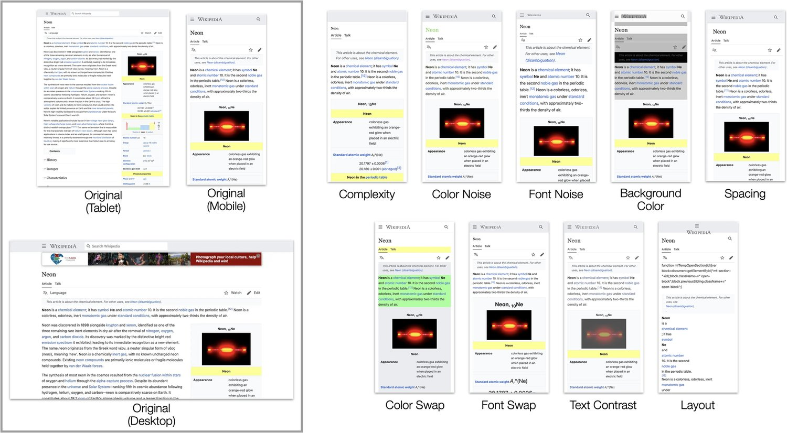
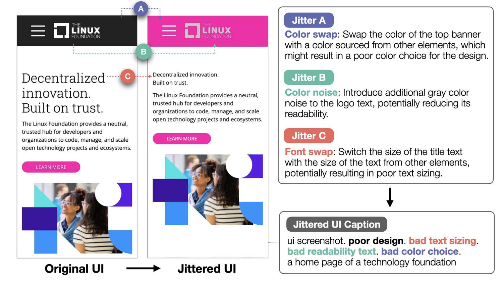
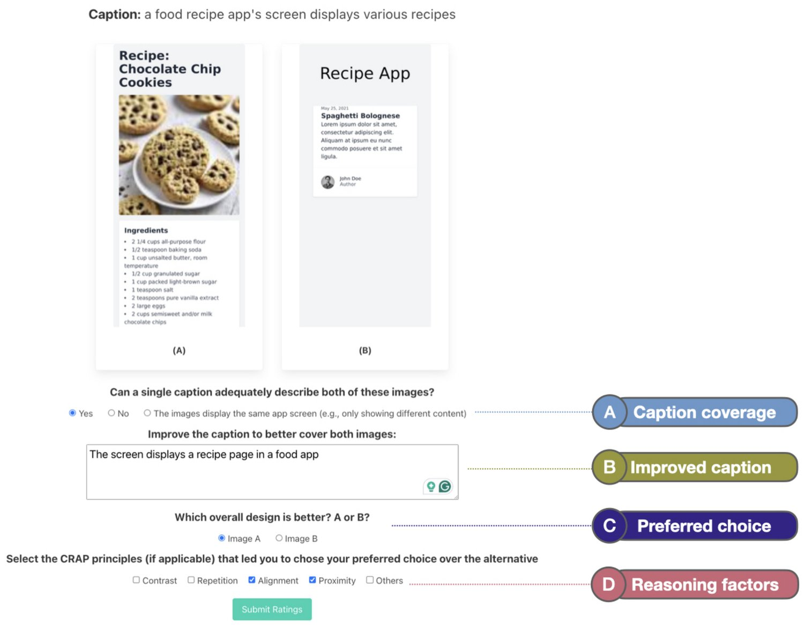
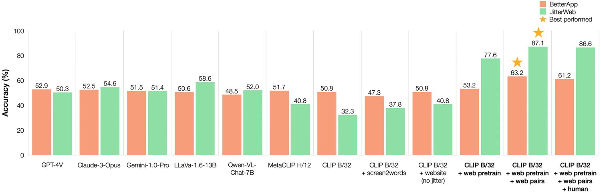
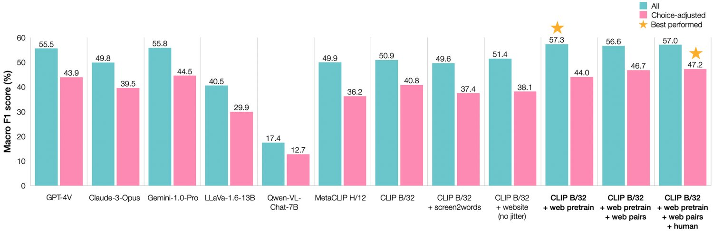
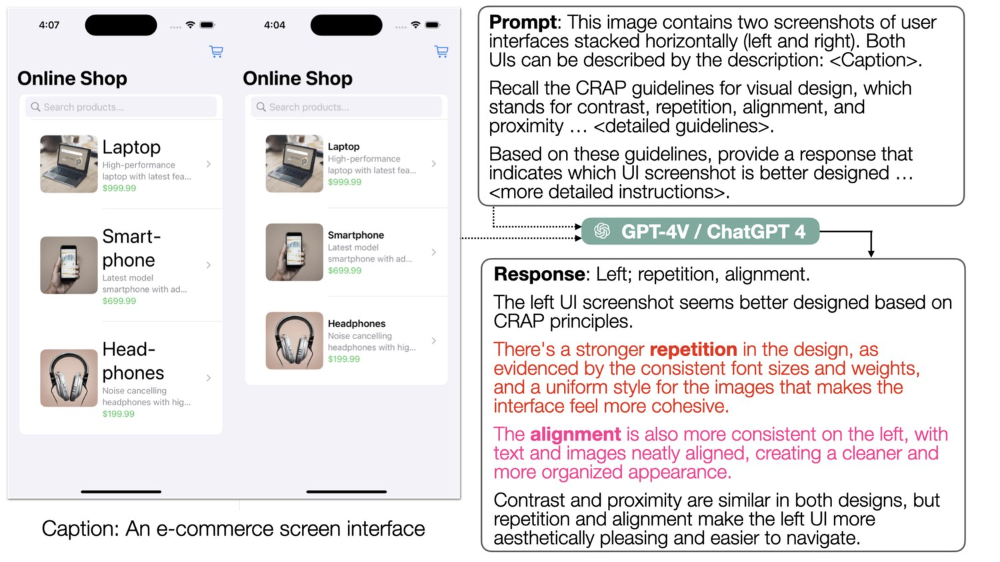
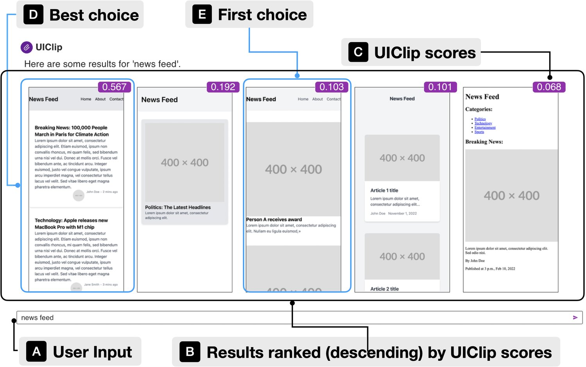
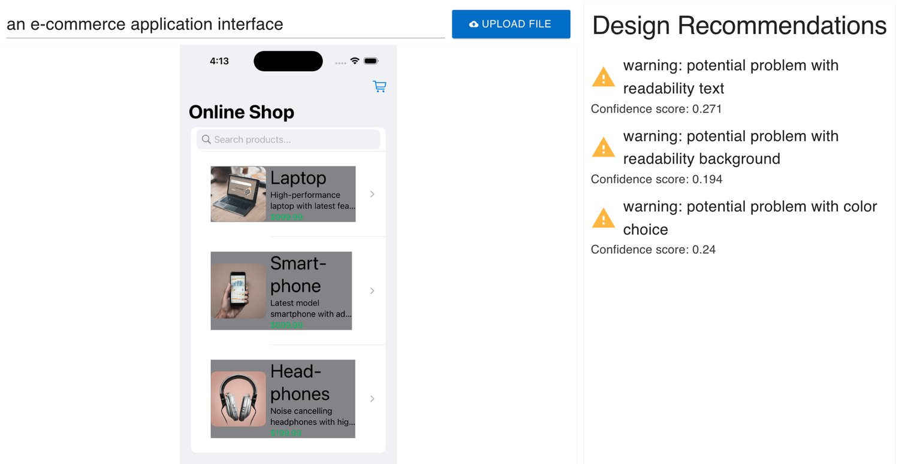
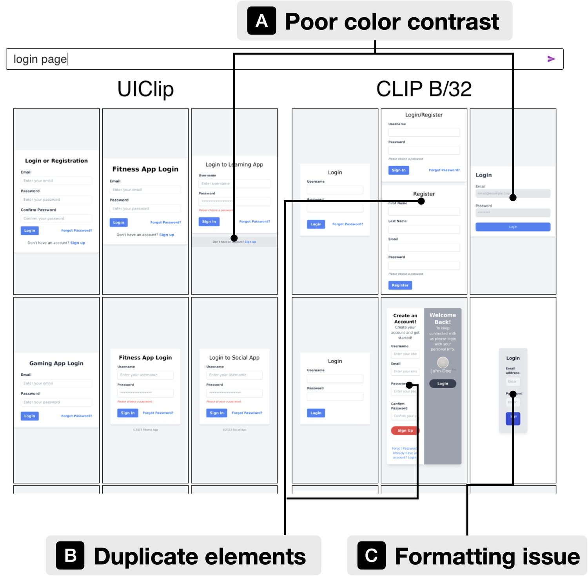

UIClip: A Data-driven Model for Assessing User Interface Design
User interface (UI) design is a difficult yet important task for ensuring the usability, accessibility, and aesthetic qualities of applications. In our paper, we develop a machine-learned model, UIClip, for assessing the design quality and visual relevance of a UI given its screenshot and natural language description. To train UIClip, we used a combination of automated crawling, synthetic augmentation, and human ratings to construct a large-scale dataset of UIs, collated by description and ranked by design quality. Through training on the dataset, UIClip implicitly learns properties of good and bad designs by i) assigning a numerical score that represents a UI design’s relevance and quality and ii) providing design suggestions. In an evaluation that compared the outputs of UIClip and other baselines to UIs rated by 12 human designers, we found that UIClip achieved the highest agreement with ground-truth rankings. Finally, we present three example applications that demonstrate how UIClip can facilitate downstream applications that rely on instantaneous assessment of UI design quality: i) UI code generation, ii) UI design tips generation, and iii) quality-aware UI example search.
What makes a good user interface (UI)? It is hard to comprehensively articulate what separates a good UI design from a bad one, and the task of UI design is challenging even for experts with years of training and practice. Guidelines exist that list some general principles (Nielsen, 1992; Shneiderman et al., 2016), but they are often insufficient or difficult to operationalize, especially for novice designers. Because of this, many application UIs today contain common design problems, which can negatively impact usability, accessibility, and design aesthetics.
什么样的用户界面（UI）才算好？要全面说清优秀 UI 设计与糟糕 UI 设计的分野并非易事，即便对受过多年训练与实践的专家而言，UI 设计仍是一项棘手的任务。虽有指南列出了若干通用原则（Nielsen, 1992; Shneiderman et al., 2016），但它们常常不够充分或难以落地，对新手设计师尤其如此。正因如此，当今许多应用 UI 都存在常见设计问题，对易用性、可访问性与设计美感造成负面影响。
The most holistic method of evaluating UIs is usability testing, which can uncover UI design flaws, accessibility problems, and software bugs, but it is generally a time-consuming and costly process. Approximate assessments, such as heuristic evaluation, rely on experts applying a set of pre-defined principles to rapidly identify potential problems and estimate overall UI quality. However, even these abbreviated strategies can be difficult to employ consistently or in the absence of a knowledgeable expert.
评估 UI 最全面的方法是可用性测试，它能发现 UI 设计缺陷、可访问性问题与软件缺陷，但这一过程通常耗时且昂贵。启发式评估等近似方法依赖专家套用一组预定义原则，快速识别潜在问题并估计 UI 整体质量。然而即便这些简化策略，在没有资深专家参与时也难以稳定执行。
To this end, computational methods have been developed to estimate the quality of UIs, taking into account factors such as visual aesthetics (Miniukovich and De Angeli, 2015), cognitive principles (Oulasvirta et al., 2018), and context (Oulasvirta et al., 2022). Because of their automated nature, they unlock new opportunities for UI design (Swearngin et al., 2020; Todi et al., 2016) and evaluation (Moran et al., 2018). However, most of these prior computational approaches are limited. Some techniques apply objectives and metrics inspired by cognitive principles (Miniukovich and De Angeli, 2015; Oulasvirta et al., 2018), such as visual complexity, layout quality, and color harmony to UI designs, but their outputs still require interpretation and cannot, for example, be used to compare the quality of two candidate designs. Other approaches are toolkits that learn user-specific models for generating adaptive interfaces (Gajos and Weld, 2004; Gajos and Weld, 2005; Gajos et al., 2007), and they also cannot be applied to more generalized UI design tasks.
为此，研究者开发了计算方法估算 UI 质量，把视觉美感（Miniukovich and De Angeli, 2015）、认知原则（Oulasvirta et al., 2018）与情境（Oulasvirta et al., 2022）等因素纳入考量。由于其自动化特性，这些方法为 UI 设计（Swearngin et al., 2020; Todi et al., 2016）与评估（Moran et al., 2018）带来了新机会。然而这些既有计算方法大多存在局限。一些技术把受认知原则启发的指标（Miniukovich and De Angeli, 2015; Oulasvirta et al., 2018）——如视觉复杂度、布局质量与色彩和谐——套用到 UI 设计上，但其输出仍需人工解读，也无法用于比较两个候选设计的质量。另一些方法是工具包，通过学习用户特定模型来生成自适应界面（Gajos and Weld, 2004; Gajos and Weld, 2005; Gajos et al., 2007），同样无法推广到更通用的 UI 设计任务。
Our paper introduces a novel computational model, UIClip, to assess the design quality of any UI from its screenshot. UIClip is based on the well-known CLIP vision-language model (Radford et al., 2021), and it uses a natural language description of the UI coupled with a screenshot to assign a numerical score that estimates design quality. CLIP, by default, is not well-suited for judging UI quality and relevance. Therefore, to train UIClip, we developed a novel technique for synthetically generating a large-scale dataset of UIs ranked by design quality. Our strategy takes existing UIs (e.g., web pages) and intentionally introduces design defects by modifying style and layout attributes. The process created pairs of original and “jittered” interfaces and allowed the models to learn the differentiation between these pairs. We used this method to generate 2.3 million pairs of UIs coupled with their quality-related descriptions. To align our model with real-world design preferences, we collected 1.2K ratings from professional designers on an extra UI set. These ratings were used to refine UIClip and validate the effectiveness of our model.
本文提出一种新型计算模型 UIClip，可从截图评估任意 UI 的设计质量。UIClip 基于广为人知的 CLIP 视觉语言模型（Radford et al., 2021），把 UI 的自然语言描述与其截图配对，给出一个估计设计质量的数值分数。CLIP 本身并不适合评判 UI 质量与相关性。因此，为训练 UIClip，我们开发了一种新技法，合成生成一个按设计质量排序的大规模 UI 数据集。我们的策略是取现有 UI（如网页），通过修改样式与布局属性刻意引入设计缺陷。该流程生成成对的原始界面与「扰动」界面，使模型得以学习区分二者。我们用这一方法生成了 230 万对 UI 及其质量相关描述。为使模型契合真实世界的设计偏好，我们还在额外一组 UI 上收集了 1.2K 条专业设计师评分，用于精调 UIClip 并验证模型的有效性。
We benchmarked UIClip with other large vision-language models (LVLM) by evaluating them on a held-out set of UI screens. We assess the models on three tasks, including design quality, improvement suggestions, and design relevance. The results showed that UIClip outperformed all other models in every task, despite being smaller in size. Finally, to demonstrate the utility of UIClip, we present three example applications that use our model to provide different types of computational UI design assistance: i) quality-aware UI code generation, ii) UI design suggestion generation, and iii) quality-aware UI example retrieval.
我们在一组留出的 UI 屏幕集合上，把 UIClip 与其他大型视觉语言模型（LVLM）做基准比较，评测覆盖三项任务：设计质量、改进建议与设计相关性。结果显示，尽管 UIClip 规模更小，它在每一项任务上都优于所有其他模型。最后，为展示 UIClip 的实用价值，我们给出三个示例应用，用我们的模型提供不同类型的计算式 UI 设计辅助：i）质量感知的 UI 代码生成，ii）UI 设计建议生成，iii）质量感知的 UI 示例检索。
To summarize, our work makes the following contributions:
综上，本文的贡献如下：
A large-scale dataset of UI designs and descriptions comprised of synthetic and human-generated design ratings.
（1）一个由合成评分与人工评分共同构成的、大规模 UI 设计与描述数据集。
A computational model that scores UI screenshots based on relevance to a textual description and design quality.
（2）一个依据与文本描述的相关性及设计质量对 UI 截图打分的计算模型。
Three example applications that demonstrate how UIClip can be used to facilitate downstream applications: i) a tool that improves the quality of UI code generated by LLMs, ii) a tool that generates design recommendations for a UI screenshot, and iii) a UI design search engine.
（3）三个示例应用，展示 UIClip 如何用于支撑下游应用：i）提升 LLM 生成 UI 代码质量的工具，ii）为 UI 截图生成设计建议的工具，iii）UI 设计搜索引擎。
To facilitate research in this area, we plan to release all the training code, data, and models.
为促进该领域研究，我们计划公开全部训练代码、数据与模型。
Our research builds upon existing work in UI design and evaluation by encoding UI design quality into computational models, enabling the models to serve as potential tools for UI design assessment. We review the literature in three relevant areas: UI design tools, UI evaluation, and machine learning-based quality metrics.
我们的研究建立在已有 UI 设计与评估工作之上，把 UI 设计质量编码进计算模型，使模型有望成为 UI 设计评估的工具。我们从三个相关方向梳理文献：UI 设计工具、UI 评估与基于机器学习的质量指标。
Embedding computational capabilities into UI design tools enables machines to computationally assess the design thus empowering designers to ideate, prototype, and iterate their work effectively. Early research like SILK (Landay, 1996) and DENIM (Newman et al., 2003) introduced quick sketching capabilities, making the design process more agile. Damask (Lin and Landay, 2002) refined the creation process with its emphasis on pattern-based design, enhancing UI component reusability. The evolution continued with Smart Templates (Nichols et al., 2004), which provided designers with adaptable frameworks that intelligently adjusted to their needs, simplifying the design process. Sikuli (Yeh et al., 2009) built upon the thread of intelligent design tools by integrating image-based search functionalities, making it easier for designers to find and incorporate UI elements. As the field progressed, tools like Sketchplore (Todi et al., 2016) and Scout (Swearngin et al., 2020) enabled designers to explore a wider array of design alternatives, encouraging creativity. D.note (Hartmann et al., 2010) and Swire (Huang et al., 2019) introduced interactive elements that incorporated user feedback directly into the design, enhancing user-centric approaches. The integration of deep learning into UI design tools marked a pivotal shift, starting with the use of datasets like RICO (Deka et al., 2017) to inform model training. For instance, GUIComp (Lee et al., 2020) is a tool that includes an autoencoder trained on the large-scale UI dataset to help find UI design examples for inspiration. In addition, the tool employed convolutional neural networks to evaluate the visual complexity of UI prototypes and pinpoint the main areas of interest. Similarly, VINS (Bunian et al., 2021) introduced a visual search framework powered by models trained on a more diverse annotated UI dataset, enabling designers to find similar visual UI designs across platforms. Our work builds upon existing work in computational UI design tools by building neural models to quantify UI design quality through language, and integrate the models into various UI design applications.
把计算能力嵌入 UI 设计工具，使机器能够以计算方式评估设计，从而让设计师高效地构思、原型化与迭代。SILK（Landay, 1996）与 DENIM（Newman et al., 2003）等早期研究引入快速草图能力，使设计流程更敏捷。Damask（Lin and Landay, 2002）强调基于模式的设计，改进了创作流程，提升了 UI 组件的可复用性。Smart Templates（Nichols et al., 2004）延续这一演进，为设计师提供可自适应其需求的框架，简化了设计过程。Sikuli（Yeh et al., 2009）沿智能设计工具的脉络，集成了基于图像的搜索功能，使设计师更容易查找与引入 UI 元素。随着领域推进，Sketchplore（Todi et al., 2016）与 Scout（Swearngin et al., 2020）等工具让设计师能探索更广的设计备选方案，激发创意。D.note（Hartmann et al., 2010）与 Swire（Huang et al., 2019）引入交互元素，把用户反馈直接纳入设计，强化了以用户为中心的方法。深度学习融入 UI 设计工具标志着一个关键转折，起点是利用 RICO（Deka et al., 2017）等数据集支撑模型训练。例如 GUIComp（Lee et al., 2020）包含一个在大规模 UI 数据集上训练的自编码器，帮助检索 UI 设计示例以获取灵感；此外该工具用卷积神经网络评估 UI 原型的视觉复杂度，并定位主要兴趣区域。类似地，VINS（Bunian et al., 2021）提出了一个视觉搜索框架，由在更多样化的标注 UI 数据集上训练的模型驱动，使设计师能跨平台查找相似的视觉 UI 设计。本文在已有计算式 UI 设计工具工作的基础上，构建神经模型通过语言量化 UI 设计质量，并把模型集成到各类 UI 设计应用中。
Traditional UI evaluation, initially rooted in heuristic evaluation and established guidelines (Nielsen, 1994; Jansen, 1998), has evolved significantly over time. The development of automated metrics marked a transition towards more objective and scalable UI assessments. Early work like ARNAULD (Gajos and Weld, 2005) collected user preferences about specific outcomes to automatically learn and tailor a cost function for UI assessment and adaptation. tLight (Miniukovich and De Angeli, 2015) continued this vision and presented eight automatic metrics for evaluating graphical user interfaces’ aesthetics, demonstrating their effectiveness on desktop and mobile platforms. Progressing further, researchers also explored assessing the visual complexity of mobile user interfaces, establishing metrics that link visual complexity to perceived usability (Riegler and Holzmann, 2018). This shift underscores a growing emphasis on quantifying user interface elements to predict usability outcomes. Moreover, integrating cognitive principles into UI evaluation is gaining traction, with metrics now considering harmony and attractiveness, aligning with how users perceive and organize visual information. For instance, the Aalto Interface Metrics (AIM) service (Oulasvirta et al., 2018) demonstrates how blending user perception and attention models can improve GUI design evaluation. In recent developments, deep learning has been employed to model user interaction aspects like tappability (Swearngin and Li, 2019; Schoop et al., 2022) and draggability (Wu et al., 2023a), marking a shift towards using neural modeling to enhance our understanding of user behaviors. Furthermore, with the rise of generative models, recent research applies Large Language Models (LLMs) to provide UI design feedback (Duan et al., 2024), illustrating how combining design knowledge parameterized in large pre-trained models with user input can be helpful for designers to improve the visual UI design. Our research builds on these advancements by linking UI design with quality-focused natural language descriptions, leveraging language as a tool for retrieval and feedback in design.
传统 UI 评估最初根植于启发式评估与既有指南（Nielsen, 1994; Jansen, 1998），随时间推移发生了显著演进。自动化指标的发展标志着评估转向更客观、可扩展的方向。ARNAULD（Gajos and Weld, 2005）等早期工作收集用户对特定结果的偏好，自动学习并定制用于 UI 评估与适配的代价函数。tLight（Miniukovich and De Angeli, 2015）延续这一思路，提出八项评估图形用户界面美感的自动指标，并证明其在桌面与移动平台上的有效性。进一步，研究者还探索评估移动用户界面的视觉复杂度，建立把视觉复杂度与感知易用性关联的指标（Riegler and Holzmann, 2018）。这一转向体现出对量化界面元素以预测易用性结果的日益重视。此外，把认知原则引入 UI 评估正获得更多关注，指标开始考虑和谐性与吸引力，与用户感知和组织视觉信息的方式相吻合。例如 Aalto Interface Metrics（AIM）服务（Oulasvirta et al., 2018）展示了融合用户感知与注意力模型如何改进 GUI 设计评估。在近期进展中，深度学习被用于建模可点击性（Swearngin and Li, 2019; Schoop et al., 2022）与可拖拽性（Wu et al., 2023a）等用户交互维度，标志着借助神经建模加深对交互行为理解的转向。此外，随着生成式模型兴起，近期研究把大语言模型（LLM）用于提供 UI 设计反馈（Duan et al., 2024），说明把大型预训练模型中参数化的设计知识与用户输入结合，对设计师改进视觉 UI 设计确有帮助。我们的研究在这些进展之上，把 UI 设计与以质量为中心的自然语言描述相接，利用语言作为设计中检索与反馈的工具。
Learning scoring functions has been an important topic in many areas of machine learning. In the context of text-generation or machine translation, a popular class of text quality metrics involve the use of “ground truth” responses known as “references.” BLEU (Papineni et al., 2002) and later variants like ROGUE (Lin, 2004) and Meteor (Banerjee and Lavie, 2005) were developed for other applications, such as summarization (Giannakopoulos and Karkaletsis, 2011). However, not all domains have access to human-authored references, leading to the development of "reference-free" metrics. Perplexity (Jelinek et al., 1977), for instance, is a classic metric used to estimate how likely a piece of text, often generated by a machine, is to come from a human-generated corpus. More recently, direct human evaluations have been utilized to assess model-generated text (Zheng et al., 2024). This type of evaluation system often ask individuals to compare outputs from the same input text to determine which model-generated version they prefer. In the realm of computer vision, numerous metrics have been devised to evaluate the quality of images produced by models, including the inception score (Salimans et al., 2016), the Fréchet Inception Distance (FID) (Heusel et al., 2017), and more recently the HyPE scores (Zhou et al., 2019). Finally, there has been a class of evaluation methods aimed at multi-modal applications that concern both text and images. CLIPScore (Hessel et al., 2021) is a technique for assessing the quality of image captions by using the pre-trained OpenAI CLIP model. CLIP-IQA (Wang et al., 2023) further adopts CLIP to contrastively learn a function that evaluates images based on various quality attributes (e.g., brightness, colorfulness) and perceptual aspects (happy, scary). TIFA (Hu et al., 2023) introduces a method where it asks and answers its own visual questions using large vision-language models. It then quantifies how well the text prompts and the images generated from those prompts align. In our paper, we show that off-the-shelf vision-language models like CLIP often fall short in accurately analyzing UI screenshots, particularly when assessing UI design quality through language. To tackle this problem, we introduce a comprehensive UI design quality dataset that integrates both machine and human feedback. The collected data enables researchers to build and iterate their computational models using this quality-encoded dataset.
学习打分函数在机器学习诸多领域中都是重要课题。在文本生成或机器翻译语境下，一类流行的文本质量指标使用被称为「参考」的「真值」回答。BLEU（Papineni et al., 2002）及其后的变体如 ROGUE（Lin, 2004）与 Meteor（Banerjee and Lavie, 2005）最初为其他应用开发，如摘要（Giannakopoulos and Karkaletsis, 2011）。然而并非所有领域都能获得人工撰写的参考，由此催生了「无参考」指标。例如困惑度（Jelinek et al., 1977）是一个经典指标，用于估计一段通常由机器生成的文本有多大可能出自人工生成的语料。更近期地，直接人工评估被用于评测模型生成的文本（Zheng et al., 2024）；这类评测体系常要求个体比较同一输入文本下的多个输出，判断自己更偏好哪个模型生成的版本。在计算机视觉领域，人们设计了众多指标评估模型生成图像的质量，包括 inception score（Salimans et al., 2016）、Fréchet Inception Distance（FID）（Heusel et al., 2017），以及更近期的 HyPE 分数（Zhou et al., 2019）。最后，还有一类评测方法面向同时涉及文本与图像的多模态应用。CLIPScore（Hessel et al., 2021）利用预训练的 OpenAI CLIP 模型评估图像描述的质量。CLIP-IQA（Wang et al., 2023）进一步采用 CLIP 对比学习一个函数，依据多种质量属性（如亮度、色彩丰富度）与感知方面（快乐、恐怖）评估图像。TIFA（Hu et al., 2023）提出一种方法，用大型视觉语言模型自问自答视觉问题，再量化文本提示与由这些提示生成的图像之间的对齐程度。本文表明，CLIP 这类开箱即用的视觉语言模型往往难以准确分析 UI 截图，在通过语言评估 UI 设计质量时尤其如此。为解决该问题，我们提出一个融合机器与人类反馈的综合 UI 设计质量数据集，所采集的数据使研究者能够基于这一质量编码数据集构建与迭代其计算模型。

图 1. 我们的合成数据集由经扰动函数处理以引入设计缺陷的 UI 构成。图中我们独立展示每种扰动函数的效果，尽管实际最多可同时施加三种扰动函数。我们的爬虫采集多种设备（桌面、平板与移动）的截图，但受篇幅限制，此处仅展示渲染后的移动端示例。
While several UI datasets exist, they are annotated for other applications, such as element detection (Deka et al., 2017; Bunian et al., 2021), natural language description (Wang et al., 2021), and app categorization (Leiva et al., 2020). Although some prior work has rated model-generated UI code (Si et al., 2024; Gajos and Weld, 2005), to our knowledge, no publicly available, large-scale dataset exists for UI design assessment. To this end, we collected over 2.3 million UI screenshots, each paired with natural language text that includes a caption, design quality, and design defects. Since it is prohibitively costly and time-consuming to collect enough human-annotated data to train deep learning models, the majority of our data (over 99.9%) is synthetically generated, and a small set of human ratings is collected from designers. We refer to our synthetically-generated dataset as JitterWeb and our human-rated dataset as BetterApp.
尽管已有若干 UI 数据集，它们的标注都面向其他用途，如元素检测（Deka et al., 2017; Bunian et al., 2021）、自然语言描述（Wang et al., 2021）与应用分类（Leiva et al., 2020）。虽然已有工作对模型生成的 UI 代码做过评分（Si et al., 2024; Gajos and Weld, 2005），但据我们所知，尚不存在公开的、面向 UI 设计评估的大规模数据集。为此，我们采集了超过 230 万个 UI 截图，每个都配有包含描述文本、设计质量与设计缺陷的自然语言文本。由于采集足量人工标注数据来训练深度学习模型成本过高、耗时过长，我们的数据绝大部分（超过 99.9%）由合成生成，另有一小部分评分来自设计师。我们把合成生成的数据集称为 JitterWeb，把人工评分的数据集称为 BetterApp。
JitterWeb is a synthetic dataset of 2.3 million examples created through automated web crawling, data augmentation, and captioning. Recent research has shown that UIs on the web (e.g., web pages), are a useful source of data for data-driven UI modeling, due to the relative ease of applying automated crawling techniques and extracting semantic metadata from the browser (Wu et al., 2023b; Kumar et al., 2013). The main idea behind our synthetic data approach was to first visit an existing web page and record its appearance (i.e., take a screenshot), then randomly apply several jitter functions that intentionally degrade the design quality of the web page in different, controllable ways and record the resulting appearances. Jitter functions are implemented as snippets of JavaScript code that, for example, add random noise to CSS attributes or swap colors in the web page’s color palette. The result of applying this process to a web page is one “original" sample paired with several variations of itself, each with a set of known design defects. Through this process, we are able to construct a large-scale dataset to learn the relative design quality of UIs. In other words, we assume that the original UI is mostly better than the jittered one. Instances where the jittered version outperforms the original are uncommon and the noises introduced from such instances should be negligible given the scale of our dataset.
JitterWeb 是一个含 230 万条样本的合成数据集，通过自动化网页爬取、数据增强与描述生成构建。近期研究表明，网页等 Web UI 是数据驱动 UI 建模的优质数据来源，因为自动化爬取技术与从浏览器提取语义元数据都相对容易（Wu et al., 2023b; Kumar et al., 2013）。我们合成数据方法的核心思路是：先访问一个现有网页并记录其外观（即截图），再随机施加若干扰动函数，以不同且可控的方式有意降低网页的设计质量，并记录由此产生的外观。扰动函数实现为 JavaScript 代码片段，例如给 CSS 属性加入随机噪声，或交换网页调色板中的颜色。对某一网页施加该流程的结果，是得到一个「原始」样本及其若干变体，每个变体都带有一组已知的设计缺陷。借此我们得以构建大规模数据集，用以学习 UI 的相对设计质量。换言之，我们假定原始 UI 大多优于被扰动的 UI。扰动版本优于原始版本的情况并不常见，考虑到数据集规模，由此引入的噪声可以忽略。
We followed the collection methodology of WebUI (Wu et al., 2023b), where a headless Chrome browser was used to visit thousands of websites with different simulated client devices (e.g., mobile phone, desktop, tablet). It was not possible to directly re-use the publicly-released WebUI data, which consists of screenshots and extracted metadata, because our data augmentation pipeline necessitates loading the website in a browser to run the jitter functions, which are implemented as JavaScript code. Unlike the crawler used in WebUI, we adopted a simpler architecture that directly crawls URLs from publicly available datasets. We crawled nearly 300,000 web pages, using URLs from the MC4 dataset provided by the Allen Institute for AI (Dodge et al., 2021), which is an adaptation of the original C4 dataset (Raffel et al., 2020) frequently used to train large language models (Le Scao et al., 2022; Chowdhery et al., 2023; Touvron et al., 2023; Biderman et al., 2023). This dataset has undergone screening to remove explicit content (Dodge et al., 2021). In addition, we excluded URLs that resulted in 404 errors.
我们沿用 WebUI（Wu et al., 2023b）的采集方法，用无头 Chrome 浏览器以不同模拟客户端设备（如手机、桌面、平板）访问数千个网站。公开发布的 WebUI 数据（截图与提取的元数据）无法直接复用，因为我们的数据增强流水线必须在浏览器中加载网站才能运行以 JavaScript 实现的扰动函数。与 WebUI 所用爬虫不同，我们采用了更简单的架构，直接从公开数据集爬取 URL。我们爬取了近 300,000 个网页，URL 取自 Allen Institute for AI 提供的 MC4 数据集（Dodge et al., 2021），该数据集是常用于训练大语言模型的原始 C4 数据集（Raffel et al., 2020）的改编版本（Le Scao et al., 2022; Chowdhery et al., 2023; Touvron et al., 2023; Biderman et al., 2023）。该数据集已做过筛查以移除不当内容（Dodge et al., 2021）。此外，我们排除了返回 404 错误的 URL。
JitterWeb was randomly partitioned into training (80%), validation (10%), and test (10%) splits by web page URL. We further randomly selected 201 samples from the original test split, to make it the same size as the test split from our human-rated data (BetterApp) for model evaluation.
JitterWeb 按网页 URL 随机划分为训练（80%）、验证（10%）与测试（10%）三部分。我们进一步从原始测试划分中随机选取 201 条样本，使其规模与人工评分数据（BetterApp）的测试划分一致，用于模型评测。
Jitter functions are JavaScript code snippets that are used to controllably introduce design defects into web pages. To design these functions, we reviewed various guidelines on usability and design evaluation found in design textbooks (Shneiderman et al., 2016; Lidwell et al., 2010), online resources (Wong, 2024; Gordon, 2020), and published literature (Luther et al., 2015). While undoubtedly useful for informing application design, many of the principles described in these resources could not be assessed by looking at a single screenshot (e.g., “error prevention,” “user control and freedom”). We ultimately chose the CRAP guidelines (Williams, 2015), which are four general principles for UI visual design relevant to our task: contrast, repetition, alignment, and proximity. We developed the jitter functions based on a combination of these guidelines and what is possible to programmatically adjust through JavaScript and CSS styling.
扰动函数是一段段 JavaScript 代码，用于向网页中可控地引入设计缺陷。为设计这些函数，我们查阅了设计教材（Shneiderman et al., 2016; Lidwell et al., 2010）、在线资源（Wong, 2024; Gordon, 2020）与已发表文献（Luther et al., 2015）中关于易用性与设计评估的各种指南。这些资源描述的许多原则虽无疑对应用设计有指导意义，却无法仅凭单张截图加以评估（如「防错」「用户的控制权与自由度」）。我们最终选择了 CRAP 指南（Williams, 2015），它是与本任务相关的四条 UI 视觉设计通用原则：对比（contrast）、重复（repetition）、对齐（alignment）与亲密性（proximity）。我们结合这些指南，以及可通过 JavaScript 与 CSS 样式编程调整的内容，开发了扰动函数。
Below, we describe the functions that we implemented and the CRAP principles that inspired them:
下面介绍我们实现的函数及其所依据的 CRAP 原则：
Colors
Color Swap (contrast, repetition) - Randomly swaps the colors of elements on the web page
Color Noise (contrast, repetition) - Adds numerical noise to CSS attributes for RGB values
• 颜色 – 颜色交换（对比、重复）- 随机交换网页上各元素的颜色 – 颜色噪声（对比、重复）- 给 RGB 值的 CSS 属性加入数值噪声
Font
Font Size (contrast, repetition) - Randomly swaps the font sizes of text elements in the page (e.g., swapping the size of subheading text with the size of body text)
Text Noise (contrast, repetition) - Adds numerical noise to CSS attributes for text size
• 字体 – 字号（对比、重复）- 随机交换页面中文本元素的字号（例如把副标题文字的字号与正文文字的字号互换） – 文本噪声（对比、重复）- 给文字尺寸的 CSS 属性加入数值噪声
Contrast
Text Color (contrast) - The contrast of text is decreased so that it appears closer to its container’s color
Background Color (contrast) - Makes the background color of containers containing text closer to the color of the text.
• 对比度 – 文本颜色（对比）- 降低文本对比度，使其更接近容器的颜色 – 背景颜色（对比）- 使含文本容器的背景色更接近文本颜色。
Spacing (alignment, proximity) - Adds numerical noise to CSS attributes for margin and padding
• 间距（对齐、亲密性）- 给外边距与内边距的 CSS 属性加入数值噪声
Complexity (contrast, repetition, alignment, proximity) - Randomly removes images, text, and other element styling
• 复杂度（对比、重复、对齐、亲密性）- 随机移除图像、文本及其他元素样式
Layout (alignment, proximity) - Modifies CSS related to element layout such as flow (e.g., horizontal or vertical).
• 布局（对齐、亲密性）- 修改与元素布局相关的 CSS，如流向（例如横向或纵向）。
The jitter functions are composable, and when the crawler visits a web page, it chooses up to three functions via uniform random sampling to apply sequentially before taking a screenshot of the jittered UI. Figure 1 shows an example of a web page processed by each of our jitter functions.
扰动函数可组合使用；爬虫访问某一网页时，通过均匀随机采样选取至多三个函数依次施加，然后对被扰动后的 UI 截图。图 1 展示了一个网页经我们每种扰动函数处理后的示例。
Each UI screenshot was associated with a natural language description that includes a caption, design quality, and a list of design defects (inferred from the applied jitter functions). The full description is formatted by concatenating multiple components: i) a constant prefix (“ui screenshot."), ii) a design quality tag (“poor design" if the screen has been jittered, otherwise “well-designed"), iii) a list of design defects (e.g., if the “text contrast” jitter function was applied, a suggestion would be “bad text contrast”), and iv) a caption describing the screenshot. Figure 2 provides a visual illustration of this process.
每个 UI 截图都配有一段自然语言描述，包含描述文本、设计质量以及一份设计缺陷清单（由所施加的扰动函数推断而来）。完整描述由多个部分拼接而成：i）固定前缀（“ui screenshot.”）；ii）设计质量标签（若屏幕被扰动过则为“poor design”，否则为“well-designed”）；iii）设计缺陷清单（例如若施加了“text contrast”扰动函数，对应建议为“bad text contrast”）；iv）描述该截图的说明文字。图 2 给出了该流程的示意。
The design-related components are inferred from the jittering process. To generate the caption, we used a set of pre-trained models to predict (Lee et al., 2023; Wang et al., 2021), then paraphrase (Jiang et al., 2023) a caption from the UI screenshot. In the generation process, we specifically avoided the use of models with restrictive usage agreements or trained using data from models with restrictive usage agreements 11 1 The terms of service of proprietary model providers such as OpenAI, Llama, and Claude prohibit using their model outputs to train other models. Therefore we avoid them and also other “distilled” models trained on their output.. Because the introduction of design defects by jitter functions may affect the accuracy of the captioning model, we generate the caption for each original UI, and then propagate the caption to all its variations.
与设计相关的组成部分由扰动过程推断而来。为生成描述文本，我们使用一组预训练模型先从 UI 截图预测（Lee et al., 2023; Wang et al., 2021），再改写（Jiang et al., 2023）出描述。在生成过程中，我们特意回避使用条款受限的模型，或使用由条款受限模型输出训练所得的模型：OpenAI、Llama、Claude 等专有模型提供商的服务条款禁止用其模型输出训练其他模型，因此我们避开它们，也避开在其输出上训练的其他「蒸馏」模型。由于扰动函数引入设计缺陷可能影响描述模型的准确性，我们为每个原始 UI 生成描述，再把该描述传播到它的所有变体。

图 2. 我们为 JitterWeb 生成文本描述的流程。基于一组随机选取的扰动函数，若干设计缺陷被引入，例如颜色交换、颜色噪声、字体交换。这些设计缺陷作为被扰动 UI 描述的一部分被记录下来，有助于我们的模型把设计缺陷与 UI 截图关联起来。
While our synthetic approach to automatically generating pairs of design preferences can be efficiently scaled to millions of screenshots, it also has drawbacks. In the synthetic dataset, preferences are only generated between variations of the same screen, which does not reflect comparison between independent designs. While we used established design principles to author jitter functions, they may not represent the actual distribution of design flaws across real-world apps, e.g., small element margins may be a very common problem “in-the-wild" but is only represented in one of our heuristics. Finally, a part of the creation process for the synthetic dataset involves using a pre-trained UI screenshot captioning model for caption generation. This model may produce incorrect captions that limit a downstream model’s ability to understand UI design relevance. To this end, we collected the BetterApp dataset using feedback from human designers. BetterApp addresses the drawbacks of synthetic data by i) comparing UI screens from different apps, ii) collecting design defects from real apps, and iii) using human-improved UI captions.
我们自动合成设计偏好对的方案虽能高效扩展到数百万张截图，却也有缺陷。在合成数据集中，偏好只在同屏的不同变体之间产生，不反映独立设计之间的比较。尽管我们依据公认设计原则编写了扰动函数，它们未必代表真实应用中设计缺陷的实际分布——例如元素间距过小可能是「野外」极其常见的问题，却只在我们的其中一条启发式规则中有所体现。最后，合成数据集构建流程的一部分使用了预训练 UI 截图描述模型生成描述，该模型可能产生错误描述，限制下游模型理解 UI 设计相关性的能力。为此，我们借助人类设计师的反馈采集了 BetterApp 数据集。BetterApp 从三方面弥补合成数据的不足：i）比较来自不同应用的 UI 屏幕；ii）从真实应用中采集设计缺陷；iii）使用人工改进后的 UI 描述。
As a starting point, we used an existing public dataset called VINS (Bunian et al., 2021), which contains screenshots of iOS apps, Android apps, design mockups, and lower-fidelity design artifacts such as wireframes. Because it was originally used for design search and element detection applications, the VINS dataset contains screenshot images and element annotations. For our application, we only use the screenshot images and not the lower-fidelity wireframes. In addition to VINS data, we also included screenshots of UIs rendered by an open large-language model (Jiang et al., 2024) prompted to generate HTML code given natural language descriptions in our dataset. We hypothesized that these samples would contain more variation in design quality and more design defects, which could be useful for learning design quality.
作为起点，我们使用了一个名为 VINS（Bunian et al., 2021）的现有公开数据集，其中包含 iOS 应用、Android 应用、设计稿以及线框图等低保真设计产物的截图。由于该数据集原本面向设计检索与元素检测应用，它同时包含截图图像与元素标注。在我们的应用中，只使用截图图像，不使用低保真线框图。除 VINS 数据外，我们还在数据集中纳入了由开源大语言模型（Jiang et al., 2024）在给定自然语言描述后生成 HTML 代码所渲染出的 UI 截图。我们假设这些样本在设计质量上差异更大、设计缺陷更多，有助于学习设计质量。
To prepare the data for our rating procedure, we applied several additional processing steps. We first applied the same automated captioning model (Lee et al., 2023) used to construct synthetic examples to assign an initial caption to each dataset in VINS. These captions were later improved by participants. We used a pre-trained sentence embedding model (Reimers and Gurevych, 2019) to generate a fixed-size embedding for each screen based on its auto-generated caption. Finally, we applied the DBSCAN clustering algorithm (Ester et al., 1996) to group together screenshots with similar captions. As a result of this process, the screenshots are collated so that screens of similar functionality can be found in the same cluster (e.g., all login screens). We clustered the VINS and synthetic examples separately, so clusters are only made entirely of either real-world or synthetic UIs. Designers were then asked through pairwise comparisons to assign relative rankings between UI screens in the same cluster.
为准备评分流程所需数据，我们施加了若干额外处理步骤。首先，我们用构建合成样本时所用的同一自动描述模型（Lee et al., 2023），为 VINS 中的每个数据集赋予初始描述；这些描述随后由参与者改进。我们用一个预训练句嵌入模型（Reimers and Gurevych, 2019），基于自动生成的描述为每张屏幕生成固定尺寸的嵌入。最后，我们应用 DBSCAN 聚类算法（Ester et al., 1996），把描述相近的截图归为一组。经此流程，截图被整理成簇，功能相似的屏幕会落在同一簇中（例如所有登录页）。我们对 VINS 与合成样本分别聚类，因此每个簇只由真实世界 UI 或合成 UI 其中之一构成。随后请设计师通过成对比较，为同一簇内的 UI 屏幕给出相对排序。

图 3. 用于采集人工设计评分的应用截图。参与者先判断这一对截图能否用同一句描述概括（A）；若可以，则撰写一条改进后的描述（B）。参与者选择更符合该描述的一项（C），并说明选择理由（D）。
We recruited 12 designers (ages 20-32, 11 female and 1 male) as participants at a university with varying levels of experience through word of mouth. The participants had varying backgrounds. Some had up to 8 years of industry experience in UI/UX design. Others had more informal experience, but all were enrolled or had taken graduate-level courses focused on the design and implementation of UIs. Participants spent around 1.5 hours rating UI screenshots, with the goal of reaching at least 100 screenshots. Participants were compensated $10 per hour (rounded up) for their time.
我们通过口口相传在一所大学招募了 12 名设计师作为参与者（年龄 20-32 岁，11 名女性、1 名男性），经验水平各异。参与者背景多样：部分人拥有最多 8 年的 UI/UX 设计行业经验，其他人经验相对非正式，但都在读或已修读过聚焦 UI 设计与实现的研究生级别课程。参与者花了约 1.5 小时为 UI 截图评分，目标是至少完成 100 张截图。参与者按每小时 10 美元（向上取整）获得报酬。
Participants were first asked to review an online resource that describes and provides examples of the CRAP visual design principles (Kimball, 2013). Participant ratings were collected using a custom-built web application (Figure 3). The start page of the application displayed instructions and recorded a visitor ID, which allowed analysis of rating consistency.
参与者首先阅读一份介绍 CRAP 视觉设计原则并给出示例的在线资料（Kimball, 2013）。评分通过一个定制 Web 应用采集（图 3）。应用的起始页显示说明并记录了访客 ID，以便分析评分一致性。
Following the start page, the web application repeatedly i) selects a random cluster from the processed data then ii) randomly selects two UIs from within the cluster to display. The participant was then asked to do the following steps:
起始页之后，该 Web 应用反复执行：i）从处理后的数据中随机选取一个簇，ii）在该簇内随机选取两个 UI 展示。随后请参与者完成下列步骤：
Write a short, one-sentence caption that contains enough detail to describe both screenshots. If one of the screenshots is irrelevant (e.g., due to clustering error), write a caption for the first screenshot.
（1）写一句简短的单句描述，包含足以描述两张截图的细节。若其中一张截图不相关（例如因聚类错误），则为第一张截图写描述。
Provide a relative ranking between the two screenshots given the options “A is better” or “B is better.”
（2）给出两张截图之间的相对排序，选项为「A 更好」或「B 更好」。
Select all relevant CRAP principles that were important in determining the ranking, unless “about the same” was selected in the prior step.
（3）选出对确定该排序起作用的所有相关 CRAP 原则，除非上一步选了「大致相当」。
In total, we collected around 1200 ratings from all participants. We ignored pairs that could not be described by a single caption, which led to 892 rating pairs. To measure inter-rater reliability (IRR), we initially had each participant evaluate the same set of 10 predetermined pairs. Afterward, the rating pairs were distributed randomly. We used this initial set to compute Krippendorff’s alpha score, with . We discuss the factors influencing these ratings in Section 7.2, attributing the variation to the task’s inherent subjectivity and variable individual preferences, such as familiarity with Android or iOS apps.
我们共从所有参与者处收集了约 1200 条评分。无法用单句描述概括的配对被忽略，最终得到 892 个评分对。为测量评分者间信度（IRR），我们先让每位参与者评估同一组 10 个预设配对，此后的评分对则随机分发。我们用这一初始集合计算 Krippendorff's alpha 分数，为 。我们在第 7.2 节讨论影响这些评分的因素，把差异归因于任务固有的主观性与个体偏好的差异，例如对 Android 或 iOS 应用的熟悉程度。
Similar to our synthetic generation approach, responses from each step are used to construct different parts of each UI screenshot’s text description. The human-authored or human-refined caption from step 1 is used to improve the original auto-generated one. The relative ranking from step 2 is used to infer the correct design-quality tag, where the preferred example is assigned “well-designed” and the other is assigned “poor design.” If it was indicated that the two screenshots had the same quality, the design quality tag was omitted from the full description. The selected principles from step 3 are used to construct a set of design defects for the non-preferred screenshot. For example, if a participant selected the contrast principle as a reason for choosing A over B, then “bad contrast” is added to the generated description of B. Note that the same screenshot can appear in more than one randomly sampled pair, which could result in conflicting descriptions e.g., if it was preferred in one round but not in another. Our training algorithm is robust to these collisions and over time learns to approximate a score based on the proportion of times it was preferred.
与合成生成方法类似，每一步的回答被用于构建各 UI 截图文本描述的不同部分。第 1 步中人工撰写或人工改进的描述用于改进原始自动生成的描述。第 2 步的相对排序用于推断正确的设计质量标签：被偏好的样本标为“well-designed”，另一个标为“poor design”。若参与者认为两张截图质量相当，则完整描述中省略设计质量标签。第 3 步选中的原则用于为未被偏好的截图构造一组设计缺陷。例如，若参与者选择了对比原则作为选 A 弃 B 的理由，那么“bad contrast”会被加入 B 的生成描述中。注意，同一张截图可能出现在多个随机采样的配对中，从而产生冲突描述——例如它在某一轮被偏好、在另一轮未被偏好。我们的训练算法对这些冲突具有鲁棒性，随着时间推移会学会依据其被偏好的比例近似出一个分数。
To generate BetterApp training (70%), validation (10%), and test (20%) splits, we randomly partitioned the UI clusters, which ensured that both UI screenshots from rated pairs always occurred within the same split. We chose the split percentages for BetterApp so that the size of the test set is roughly equivalent in size to other popular model benchmarks (Chen et al., 2021). The final sizes of the splits were: train (618 pairs), validation (73 pairs), and test (201 pairs).
为生成 BetterApp 的训练（70%）、验证（10%）与测试（20%）划分，我们对 UI 簇做随机划分，确保评分对中的两张 UI 截图始终落在同一划分内。我们为 BetterApp 选择这样的划分比例，是为了让测试集规模大致与其他流行模型基准相当（Chen et al., 2021）。最终各划分规模为：训练（618 对）、验证（73 对）与测试（201 对）。
We used the JitterWeb and BetterApp datasets to train a computational model UIClip, that assesses UI designs from screenshots. While our datasets could be applied to train any model, such as large vision-language models (Liu et al., 2023; Bai et al., 2023) that typically include the language decoder from an LLM, we adopted the CLIP architecture (Radford et al., 2021) as it is designed to produce a numerical score, which is similar to our objective of scoring designs. In addition, we also found this model to be more versatile for supporting a set of example applications (e.g., example retrieval and scoring) and much more efficient for training and inferencing (due to much smaller size). There are several variations of the CLIP model, and we chose the smallest variation released by OpenAI called CLIP B/32, which contains 151 million parameters.
我们用 JitterWeb 与 BetterApp 数据集训练了一个从截图评估 UI 设计的计算模型 UIClip。虽然我们的数据集可用于训练任意模型，例如通常包含 LLM 语言解码器的大型视觉语言模型（Liu et al., 2023; Bai et al., 2023），我们仍采用 CLIP 架构（Radford et al., 2021），因为它被设计为输出一个数值分数，与我们对设计打分的目标相近。此外我们还发现，该模型在支撑一组示例应用（如示例检索与打分）上更为通用，且训练与推理效率高得多（因为规模小得多）。CLIP 模型有多个变体，我们选用 OpenAI 发布的最小变体 CLIP B/32，含 1.51 亿参数。
CLIP B/32 is a dual-encoder transformer model (i.e., consisting of an image and text encoder) that accepts i) a textual description and ii) an image as inputs, then encodes both into a shared embedding space. The image encoder is a vision transformer that accepts a fixed-size 224x224 image as input, splits it up into 32x32 pixel patches, and then encodes the patches into a 512-dimensional embedding. The text encoder is a transformer that accepts text sequences of up to 77 tokens (each token roughly corresponds to a word) and also produces a 512-dimensional embedding. The outputs of these two encoders are often used to produce a single numerical value, which is computed as the dot product of the image and text embeddings. CLIP’s dot product output can be interpreted in many ways, with a common one being the semantic similarity of the two inputs e.g., the text “a dog” and an image of a dog would produce a high score. CLIP was trained on roughly 400 million pairs of images and text captions scraped from the internet, which it used to learn these semantic associations. While CLIP is often successful in general image classification or association tasks, these internet crawls often lack data for more domain-specific tasks such as understanding images taken by satellites, autonomous vehicles, and medical images (Radford et al., 2021). As we show in our baseline evaluation, CLIP also performs poorly on UI screenshots, which are relatively rare in the model’s original training data.
CLIP B/32 是一个双编码器 Transformer 模型（即由一个图像编码器和一个文本编码器组成），接受 i）文本描述与 ii）图像作为输入，并把二者编码到同一嵌入空间。图像编码器是一个视觉 Transformer，接受固定尺寸 224x224 的图像，将其切分为 32x32 像素的块，再把各块编码为 512 维嵌入。文本编码器是一个 Transformer，接受最长 77 个词元（每个词元大致对应一个词）的文本序列，同样输出 512 维嵌入。两个编码器的输出常被用来产生单个数值，计算方式是图像嵌入与文本嵌入的点积。CLIP 的点积输出可有多种解读，常见的一种是两个输入的语义相似度——例如文本“a dog”与一张狗的图像会得到高分。CLIP 在从互联网抓取的约 4 亿对图像与文本描述上训练，借此习得这些语义关联。尽管 CLIP 在通用图像分类或关联任务上常取得成功，这些网络抓取数据往往缺乏更专门领域任务所需的数据，如卫星、自动驾驶车辆与医学图像的理解（Radford et al., 2021）。正如我们在基线评测中所展示的，CLIP 在 UI 截图上表现同样不佳，因为这类图像在模型原始训练数据中相对稀少。
The purpose of our training procedure is to finetune the CLIP B/32 to i) improve relevance scoring among UI screenshots and descriptions and ii) incorporate design quality as a factor in the score, and iii) associate descriptions of design defects with screenshots of UIs that contain them. We refer to our model as UIClip, since it is a descendant of CLIP that is optimized for UIs.
我们训练流程的目标是微调 CLIP B/32，以 i）提升 UI 截图与描述之间的相关性打分，ii）把设计质量作为因素纳入分数，iii）把设计缺陷的描述与包含这些缺陷的 UI 截图关联起来。我们把模型称为 UIClip，因为它是 CLIP 的后继，且针对 UI 做了优化。
We trained UIClip in four stages that incorporated different data sources and training objectives, which were designed for different use cases and tasks. In the first training stage, which we refer to as “pre-training," we trained UIClip using the JitterWeb dataset and the same training objective used in the original CLIP implementation (Radford et al., 2021). We found this useful for applications related to retrieval and associating UI screenshots with relevant descriptions. In the second stage, we switched UIClip’s training objective to an alternative loss function that specifically focuses on distinguishing good from bad UI designs. These two stages are then repeated for the BetterApp dataset, where each stage uses model weights from the previous stage as a starting point. During all stages of training, we adopt a pre-processing methodology similar to the one used in the original CLIP paper (Radford et al., 2021) and subsequent reproductions (Cherti et al., 2023), where a random-crop strategy is used to capture different parts of UI screenshots.
我们分四个阶段训练 UIClip，各阶段纳入不同数据源与训练目标，分别面向不同用例与任务。第一阶段我们称为「预训练」，用 JitterWeb 数据集与原始 CLIP 实现（Radford et al., 2021）中相同的训练目标训练 UIClip。我们发现这对检索以及把 UI 截图与相关描述关联的应用很有帮助。第二阶段，我们把 UIClip 的训练目标换成另一种损失函数，专门聚焦于区分好的与差的 UI 设计。随后在 BetterApp 数据集上重复这两个阶段，每个阶段都以上一阶段的模型权重为起点。训练的所有阶段中，我们采用与原始 CLIP 论文（Radford et al., 2021）及后续复现工作（Cherti et al., 2023）相似的预处理方法，即使用随机裁剪策略来捕捉 UI 截图的不同部分。
During the pre-training stage, we used the same training objective as the base CLIP model (Radford et al., 2021), which is described by Equation 1.
在预训练阶段，我们使用与基础 CLIP 模型（Radford et al., 2021）相同的训练目标，如式 1 所述。
| (1) |
Where, refers to the -th text embedding in the batch and refers to the -th image embedding in the batch.
其中 表示批中第 个文本嵌入， 表示批中第 个图像嵌入。
To give a high-level overview of the process, this training objective involves repeatedly sampling a minibatch of examples from the training dataset, where each example consists of an image (UI screenshot) and a textual description (caption with a design quality tag and applied jitters). The model generates embeddings for all text and images in the minibatch, then computes an similarity matrix between all combinations of images and text. The objective then computes the cross entropy loss to match each image with its original text description, and vice versa. The intuition behind this process is that the representations of corresponding images and text will gradually become more similar in the shared embedding space, while mismatched pairs will be pushed apart. In the case of UIClip, screenshots will be matched to textual descriptions containing the appropriate design quality tag, design suggestions, and caption.
概括地说，该训练目标会反复从训练数据集中采样一个含 条样本的小批量，每条样本由一张图像（UI 截图）与一段文本描述（带设计质量标签与已施加扰动的描述）构成。模型为小批量中所有文本 与图像 生成嵌入，再计算一个覆盖图像与文本所有组合的 相似度矩阵。该目标随后计算交叉熵损失，使每张图像与其原始文本描述相匹配，反之亦然。这一过程的直觉是：对应图像与文本的表示会在共享嵌入空间中逐渐变得更相似，而不匹配的配对则被推开。在 UIClip 的场景中，截图会匹配到包含恰当设计质量标签、设计建议与描述文本的文本描述。
A drawback of the standard CLIP objective is that the minibatches used to compute its loss are randomly sampled from the entire training dataset. Because the size of a minibatch is much smaller than the size of the entire training dataset, there is very low chance that a minibatch will contain examples of closely-related UI screenshots e.g., both a jittered and non-jittered version of a webpage. We hypothesized that this would make it more difficult for the model to learn relationships between these related UIs, which is necessary for assessing the relative quality of related designs. Therefore, we modified the training objective to explicitly compare pairs of related UI screens. Our method is similar to previous methods for pairwise contrastive learning (Hadsell et al., 2006), but we use a cross-entropy loss, which is more compatible with the pre-training objective, instead of the margin-based one.
标准 CLIP 目标的一个缺陷是，用于计算损失的小批量是从整个训练数据集中随机采样的。由于小批量规模远小于整个训练数据集，一个小批量中同时包含密切相关 UI 截图样本（例如同一网页的扰动版本与非扰动版本）的概率非常低。我们假设这会使模型更难学习这些相关 UI 之间的关系，而这对评估相关设计的相对质量是必要的。因此，我们修改训练目标，显式地比较成对的相关 UI 屏幕。我们的方法与已有的成对对比学习方法（Hadsell et al., 2006）类似，但我们采用交叉熵损失，而非基于间隔的损失，以便与预训练目标更好地兼容。
This training objective, shown in Equation 2, trains the model so that the embedding of the preferred screenshot has a higher dot product with a text description indicating good design (i.e., a design quality tag of “well-designed”) than the embedding of the non-preferred screenshot.
该训练目标如式 2 所示，它训练模型使被偏好截图的嵌入与表示良好设计的文本描述（即设计质量标签为“well-designed”）的点积，高于未被偏好截图的嵌入。
| (2) |
Where refers to the embedding of the preferred screenshot, is the embedding of the non-preferred screenshot, and is the embedding of the text description.
其中 表示被偏好截图的嵌入， 是未被偏好截图的嵌入， 是文本描述的嵌入。
CLIP has a fixed image input size of 224x224 pixels, which presents challenges for encoding UI screenshots during inference given that many mobile apps are designed with high height-to-width aspect ratios and dimensions can vary significantly between UIs captured on different devices. Naive pre-processing methods such as image scaling or image cropping can result in significant distortion or exclude important information. One way to address this is to make architectural changes to the model, using similar strategies to previous work (Lee et al., 2023). We adopt a simpler strategy to handle variable image sizes using a sliding window strategy. The input screenshot is first resized so that its smaller dimension is equal to 224 pixels. A 224x224 window slides across the larger dimension of size where the number of evenly-spaced steps is equal to , so that the entire image is covered with the minimal amount of overlapped area. The image encoder is used to compute an embedding for each window of the screenshot, and then all embeddings are averaged together.
CLIP 的图像输入尺寸固定为 224x224 像素，这给推理时编码 UI 截图带来了挑战：许多移动应用采用高宽高比设计，且不同设备上采集的 UI 尺寸差异显著。图像缩放或裁剪等朴素预处理方法会造成明显失真或丢失重要信息。一种应对方式是像已有工作（Lee et al., 2023）那样对模型做结构性改动。我们采用更简单的滑动窗口策略来处理可变图像尺寸：先把输入截图缩放，使其较短边等于 224 像素；随后一个 224x224 的窗口在尺寸为 的长边上滑动，等间距步数等于 ，从而以最小的重叠面积覆盖整幅图像。图像编码器为截图的每个窗口计算嵌入，再把所有嵌入取平均。
The UIClip score represents a combination of the relevance of the text description and the UI screenshot and the design quality of the UI screenshot. Computing the UIClip score requires i) a screenshot of the UI to be evaluated and ii) a user-provided caption describing the intended purpose of the UI. A full textual description is constructed by pre-pending a prefix “ui screenshot. well-designed. " to the user-provided caption. The resulting score between the encoded screenshot and the encoded full description represents a score that describes how well the screenshot adheres to a “well-designed" UI with the target caption.
UIClip 分数综合反映了文本描述与 UI 截图的相关性，以及 UI 截图的设计质量。计算 UIClip 分数需要 i）待评估 UI 的截图，ii）用户提供的、描述该 UI 预期用途的说明文字。完整文本描述通过在用户提供的说明前加上前缀“ui screenshot. well-designed. ”构造而成。编码后的截图与编码后的完整描述之间的得分，表示截图在多大程度上符合具有目标说明的“well-designed” UI。
During training, UIClip learns to associate screenshots with with natural language descriptions containing design defects that are potentially contained within them. However, because UIClip doesn’t contain a decoder network, it cannot directly generate text like other auto-regressive transformers (Radford et al., 2018).
训练过程中，UIClip 学会把截图与包含其中潜在设计缺陷的自然语言描述关联起来。然而，由于 UIClip 不含解码器网络，它无法像其他自回归 Transformer（Radford et al., 2018）那样直接生成文本。
Instead, we develop an alternative approach that uses UIClip to detect possible design defects in an input screenshot, then surfaces them as warnings to the user to fix. For each possible defect, a natural language description is constructed by pre-pending the corresponding prefix to the caption, e.g., “ui screenshot. poor design. bad text sizing. login screen.” We consider all design defects introduced by our jitter function (e.g., “bad text sizing”) and the four CRAP principles (e.g., “bad alignment”). We computed the similarity score between the input image and these text descriptions that corresponded to design defects. To determine the design defects that are surfaced, we dynamically compute a threshold. The threshold is computed as the image’s similarity score with a caption without any defect tags, e.g., “ui screenshot. poor design. login screen.” Design suggestions can also be limited to a smaller number of categories (e.g., only the four CRAP principles) through pre-defined mappings. For example, since the color noise jitter could affect both contrast and repetition, we map “bad color choice” to warnings for these classes.
为此，我们开发了另一种方案：用 UIClip 检测输入截图中可能存在的设计缺陷，再把这些缺陷作为警告呈现给用户去修复。对每种可能的缺陷，我们通过在说明前加上相应前缀构造一段自然语言描述，例如“ui screenshot. poor design. bad text sizing. login screen.”。我们考虑由扰动函数引入的所有设计缺陷（如“bad text sizing”）以及四条 CRAP 原则（如“bad alignment”）。我们计算输入图像与这些对应设计缺陷的文本描述之间的相似度分数。为决定呈现哪些设计缺陷，我们动态计算一个阈值：该阈值取图像与不含任何缺陷标签的描述（如“ui screenshot. poor design. login screen.”）之间的相似度分数。设计建议也可以通过预定义的映射限定在更少的类别中（例如只保留四条 CRAP 原则）。举例来说，由于颜色噪声扰动可能同时影响对比与重复，我们把“bad color choice”映射到这两类的警告上。

图 4. 模型在设计选择预测上的表现，该任务要求从一对 UI 截图中识别出更受偏好的那个。UIClip 系列模型（加粗字体）在 BetterApp 留出的人工评分配对与 JitterWeb 合成生成的配对上表现最好。多数基线表现很差，大致处于随机猜测水平。
The purpose of our evaluation is to quantify multiple aspects of UIClip’s design assessment capabilities and to compare its performance against several state-of-the-art baseline models and ablation conditions. We focus on tasks that correspond to three use-cases: i) design quality assessment, ii) design suggestion generation, and iii) design relevance. In all three tasks, UIClip outperforms baseline models that are often several orders of magnitude larger.
我们的评测旨在量化 UIClip 设计评估能力的多方面表现，并与若干当前最优基线模型及消融条件做比较。我们聚焦三类用例对应的任务：i）设计质量评估，ii）设计建议生成，iii）设计相关性。在这三项任务中，UIClip 都优于那些规模常常大出几个数量级的基线模型。
We conducted a quantitative evaluation that measured model performance using held-out examples from our datasets.
我们开展了一项定量评测，用数据集中留出的样本衡量模型性能。
We chose several baselines that consist of different types of multimodal machine-learning models. Originally, we planned to include AIM (Oulasvirta et al., 2018), which is a software package for computing various metrics for UIs. However, there is no definitive way to convert these metrics into design ratings, so we excluded it as a baseline. Therefore, we limit our analysis to the machine-learned models described below.
我们选取了若干由不同类型的多模态机器学习模型构成的基线。最初我们计划纳入 AIM（Oulasvirta et al., 2018）——一个用于计算 UI 各项指标的软件包。但由于没有确定的方法把这些指标转换为设计评分，我们将其排除在基线之外。因此，我们的分析仅限于下述机器学习模型。
Proprietary Large Vision-Language Models (only accessible via APIs)
OpenAI GPT-4V - GPT-4V is a model developed by OpenAI that has been shown to excel at a variety of tasks (Achiam et al., 2023).
Anthropic Claude-3-Opus - Claude-3-Opus is a model that was introduced by Anthropic at March 2024. It is the largest and most powerful variant among the three Claude-3 models (Anthropic, 2023).
Google Gemini-1.0-Pro - Google Gemini-1.0-Pro (Vision) is a model that was introduced by Google in December 2023 (Team et al., 2023). It’s the most powerful publicly available model among the three Gemini-1.0 models (Gemini-1.0-Ultra was announced but not publicly available at the time we performed this benchmarking).
• 专有大型视觉语言模型（仅可通过 API 访问）– OpenAI GPT-4V - GPT-4V 是 OpenAI 开发的模型，已被证明在多种任务上表现出色（Achiam et al., 2023）。– Anthropic Claude-3-Opus - Claude-3-Opus 是 Anthropic 于 2024 年 3 月推出的模型，是三款 Claude-3 模型中规模最大、能力最强的一档（Anthropic, 2023）。– Google Gemini-1.0-Pro - Google Gemini-1.0-Pro（Vision）是 Google 于 2023 年 12 月推出的模型（Team et al., 2023），是三款 Gemini-1.0 模型中公开可用的最强者（Gemini-1.0-Ultra 虽已发布，但在我们做此次基准测试时尚未公开可用）。
Open-source Large Vision-Language Models (model weights are publicly available)
LLaVA-1.6-13B - LLaVA (Liu et al., 2024) is a model that was trained using a combination of training examples generated by proprietary large language and vision-language models as well as publicly available visual reasoning and image caption datasets. We used the 13B model (with ViT-L/14 (Zhai et al., 2022) as the vision encoder and Vicuna-13B (Chiang et al., 2023) as the language decoder) as one of our baselines, which is the largest model that we could fit on our GPU hardware.
Qwen-VL-Chat-7B - Qwen-VL-Chat (Bai et al., 2023) is similar to LLaVA, but it was trained using an alternative pre-training objective and datasets. This model (with ViT-bigG (Gadre et al., 2024) as the vision encoder and Qwen-7B (Bai et al., 2023) as the language decoder) is notable because its pre-training data contained images of documents, which we hypothesized could be relevant for understanding UIs as well.
• 开源大型视觉语言模型（模型权重公开可用）– LLaVA-1.6-13B - LLaVA（Liu et al., 2024）用专有大语言模型与视觉语言模型生成的训练样本，以及公开的视觉推理与图像描述数据集组合训练而成。我们使用 13B 模型（以 ViT-L/14（Zhai et al., 2022）为视觉编码器、Vicuna-13B（Chiang et al., 2023）为语言解码器）作为基线之一，这是我们 GPU 硬件所能容纳的最大模型。– Qwen-VL-Chat-7B - Qwen-VL-Chat（Bai et al., 2023）与 LLaVA 类似，但采用了不同的预训练目标与数据集。该模型（以 ViT-bigG（Gadre et al., 2024）为视觉编码器、Qwen-7B（Bai et al., 2023）为语言解码器）值得关注，因为其预训练数据包含文档图像，我们假设这也有助于理解 UI。
CLIP Models
CLIP B/32 - We used the unmodified CLIP B/32 model, which was trained by OpenAI on 400M image-text pairs known as the WebImageText dataset.
MetaCLIP H/12 - Recent research has focused on improving the performance of CLIP models by scaling model size (Cherti et al., 2023) and curating larger and higher-quality multi-modal training datasets (Gadre et al., 2024). MetaCLIP H/12 is a recent model to achieve state-of-the-art performance for CLIP-like models. It is roughly 6 times larger than CLIP B/32 and was trained on roughly 6 times more data (Xu et al., 2023).
• CLIP 模型 – CLIP B/32 - 我们使用未经修改的 CLIP B/32 模型，它由 OpenAI 在被称为 WebImageText 数据集的 4 亿图文对上训练而成。– MetaCLIP H/12 - 近期研究聚焦于通过扩大模型规模（Cherti et al., 2023）与整理更大、更高质量的多模态训练数据集（Gadre et al., 2024）来提升 CLIP 模型性能。MetaCLIP H/12 是近期在 CLIP 类模型上取得当前最优性能的模型，其规模约为 CLIP B/32 的 6 倍，训练数据量约为其 6 倍（Xu et al., 2023）。
CLIP Models with Alternative Data
CLIP B/32 + Screen2Words - We trained CLIP B/32 on the largest (to our knowledge) publicly-released dataset of UI screenshots paired with human-authored natural language captions using the default CLIP training objective.
CLIP B/32 + non-jittered websites - We trained CLIP B/32 on only non-jittered websites from JitterWeb using the default CLIP training objective.
• 使用替代数据的 CLIP 模型 – CLIP B/32 + Screen2Words - 我们用（据我们所知）规模最大的公开 UI 截图与人工撰写自然语言描述配对数据集，以默认 CLIP 训练目标训练 CLIP B/32。– CLIP B/32 + non-jittered websites - 我们只用 JitterWeb 中未经扰动的网站、以默认 CLIP 训练目标训练 CLIP B/32。
UIClip
CLIP B/32 + jittered websites - We trained CLIP B/32 on all data from JitterWeb using the default CLIP training objective.
CLIP B/32 + jittered websites + web pairs - We trained CLIP B/32 on all data from JitterWeb using both the default CLIP objective and the paired contrastive objective.
CLIP B/32 + jittered websites + web pairs + human pairs - This model consists of CLIP B/32 trained on JitterWeb and BetterApp using both the default CLIP objective and the paired contrastive objective.
• UIClip – CLIP B/32 + jittered websites - 我们用 JitterWeb 的全部数据、以默认 CLIP 训练目标训练 CLIP B/32。– CLIP B/32 + jittered websites + web pairs - 我们用 JitterWeb 的全部数据、同时使用默认 CLIP 目标与成对对比目标训练 CLIP B/32。– CLIP B/32 + jittered websites + web pairs + human pairs - 该模型由 CLIP B/32 在 JitterWeb 与 BetterApp 上、同时使用默认 CLIP 目标与成对对比目标训练而成。
LVLM models rely on a natural-language prompt to instruct them on how to process the image input. We constructed a prompt that asked the model to use the CRAP principles to choose the better design of two UI screenshots and provide the most relevant CRAP principles for its decision. We provided the model with the same short description of the CRAP principles we gave our designers who rated the BetterApp dataset. Since some models could only accept one image input, we concatenated two UI screenshots side by side into a single image. In preliminary tests, we verified that all models could distinguish the inputs by asking them to describe the left and right screenshots of the input image.
LVLM 模型依赖自然语言提示来指示其如何处理图像输入。我们构造了一条提示，要求模型依据 CRAP 原则从两张 UI 截图中选出设计更好的一张，并给出与其判断最相关的 CRAP 原则。我们向模型提供了与我们给 BetterApp 数据集评分设计师相同的 CRAP 原则简短说明。由于部分模型只能接受单张图像输入，我们把两张 UI 截图并排拼接成一张图像。在初步测试中，我们通过让模型描述输入图像的左右两张截图，验证了所有模型都能区分输入。
We iterated through several versions of prompts which included well-known strategies for eliciting step-by-step reasoning (Kojima et al., 2022). We chose the best natural language prompt from our tests and used it for all models. The format of the prompt is provided in the appendix (We also included an example of GPT-4V’s output when accessed through the web interface in Figure 6, with a slightly modified prompt that allowed it to provide additional reasoning). We used the default parameters (e.g., temperature and top-p) for all the LVLMs we compared. UIClip and other CLIP-based models used the inference strategies described in Section 4.2.
我们迭代了多个提示版本，其中包括引导逐步推理的知名策略（Kojima et al., 2022）。我们从测试中挑出最佳的自然语言提示，并用于所有模型。提示格式见附录（我们还在图 6 中给出了通过网页界面访问 GPT-4V 时其输出的一个示例，所用提示略有修改，以便它提供额外推理）。我们所比较的所有 LVLM 均使用默认参数（如 temperature 与 top-p）。UIClip 及其他基于 CLIP 的模型采用第 4.2 节所述的推理策略。

图 5. 模型在设计建议预测上的表现，该任务要求依据检出的设计缺陷为 UI 生成设计建议。我们用宏平均 F1 分数衡量在四条 CRAP 原则上的性能。此外，我们引入了一种选择校正指标：若生成的建议导致选择错误，则忽略这些建议。在两种指标下，UIClip 系列模型（加粗字体）在 BetterApp 与 JitterWeb 的留出配对上表现最好。
We focused on evaluating three aspects of design assessment: i) UI design quality assessment, ii) design suggestion generation, and iii) design relevance.
我们聚焦评测设计评估的三个方面：i）UI 设计质量评估，ii）设计建议生成，iii）设计相关性。
We evaluated a model’s design quality assessment by measuring its accuracy in identifying the “preferred” UI from an example pair. The results of our experiments are shown in Figure 4.
我们通过衡量模型从示例对中识别「更受偏好」UI 的准确率，来评估其设计质量评估能力。实验结果如图 4 所示。
In general, design quality assessment is a difficult task for all tested models, especially when evaluating human-rated pairs of real app screens. Our results are shown in Figure 5. For both BetterApp and JitterWeb, the UIClip variant trained with web pairs performed the best, with an average overall accuracy of 75.12%. In particular, we see large improvements in detecting design defects in web pages (87.1%), which is what the majority of the training process and data focused on.
总体而言，设计质量评估对所有被测模型都是一项困难任务，尤其在评估真实应用屏幕的人工评分配对时。我们的结果如图 5 所示。在 BetterApp 与 JitterWeb 上，使用网页配对训练的 UIClip 变体表现最好，整体平均准确率为 75.12%。尤其在检测网页设计缺陷方面提升显著（87.1%），这正是训练过程与数据的主要着力点。
These improvements are notable because CLIP B/32, which was the base model of all UIClip variants, performed the worst out of all baselines. CLIP B/32 performed especially poorly for jittered websites, where a further analysis revealed it erroneously associated certain types of jitters (e.g., dark, unreadable backgrounds) with better design. This suggests that our training procedure and data are effective for learning design quality, especially when compared to other publicly available sources of captioned UIs (e.g., Screen2Words) or general-purpose multi-modal data (e.g., MetaCLIP H/12).
这些提升值得注意，因为作为所有 UIClip 变体基座模型的 CLIP B/32 在所有基线中表现最差。CLIP B/32 在扰动网站上表现尤其糟糕，进一步分析显示它错误地把某些类型的扰动（例如深色、不可读的背景）与更好的设计关联在一起。这说明我们的训练流程与数据对学习设计质量是有效的，尤其是相对于其他公开可得的带描述 UI 数据源（如 Screen2Words）或通用多模态数据（如 MetaCLIP H/12）而言。
Incorporating human ratings appeared to lead to slightly degraded performance (overall accuracy of 73.88%), possibly due to insufficient data. As noted previously, the UIClip with CLIP pre-training objective alone was less effective at improving design quality assessment capabilities because paired UI examples are often not found in randomly sampled minibatches. Nevertheless, it had the third-highest overall accuracy of 65.42%.
纳入人工评分似乎带来了轻微的性能下降（整体准确率 73.88%），可能是因为数据量不足。如前文所述，仅使用 CLIP 预训练目标的 UIClip 在提升设计质量评估能力上效果较差，因为随机采样的小批量中往往找不到成对的 UI 示例。尽管如此，它的整体准确率仍位列第三，为 65.42%。
Despite their much larger size, all LVLMs performed very poorly on design quality assessment, often around the level of random guessing. Interestingly, GPT-4V (overall 51.58%) refused to provide a response for around 10% of examples, stating “I’m sorry, I can’t help you with that.” In this regard, open models such as LLaVA performed better than GPT-4V, even though LLaVA was trained by distilling GPT-4V output. However, since LLaVA was not trained to refuse requests (Liu et al., 2023), it ended up with a higher overall performance for design choice prediction (with 54.59% prediction accuracy).
尽管规模大得多，所有 LVLM 在设计质量评估上都表现很差，常常处于随机猜测水平。有趣的是，GPT-4V（整体 51.58%）在约 10% 的样本上拒绝作答，回复「抱歉，我无法为你提供这项帮助」。在这方面，LLaVA 等开源模型表现优于 GPT-4V，尽管 LLaVA 是通过蒸馏 GPT-4V 输出训练而来。不过，由于 LLaVA 未被训练为拒绝请求（Liu et al., 2023），它在设计选择预测上最终取得了更高的整体性能（预测准确率 54.59%）。

图 6. GPT-4V 的一个错误设计评估与推理示例。我们请 GPT-4V 比较两张截图，输入的是基线评测中使用的同一条提示，只是这一次允许 GPT-4V 列出其推理。右侧截图是应用的原始截图；左侧截图是同一界面的一个变体，存在文字过大溢出、影响可读性与连贯性的设计缺陷。GPT-4V 错误地声称左侧截图设计更好，并给出了无关且错误的推理。
We evaluated all models’ design suggestion capabilities by comparing the model-generated output to the CRAP principles selected by designers when rating UI quality in BetterApp. There were four possible CRAP principles that could have been chosen for each comparison, which we formulate as a multi-label classification problem with four labels. Since designers were allowed to omit reasoning for comparisons, we ignored comparisons where none of the CRAP principles were selected.
我们通过与设计师在 BetterApp 中评分 UI 质量时所选择的 CRAP 原则做比对，评估所有模型的设计建议能力。每次比较有四条可能的 CRAP 原则可供选择，我们将其表述为一个含四个标签的多标签分类问题。由于设计师可以不为比较提供理由，我们忽略了未选择任何 CRAP 原则的比较。
Again, design suggestion was a challenging task for all tested models. Some LVLM baselines listed all four CRAP principles for almost every single example, despite being prompted to only choose the most relevant principles. This appears to be consistent with prior work on using LLMs for heuristic evaluation (Duan et al., 2024), where similar models often provided a large number of irrelevant design suggestions.
同样，设计建议对所有被测模型都是一项有挑战的任务。部分 LVLM 基线几乎对每个样本都列出全部四条 CRAP 原则，尽管提示只要求选择最相关的原则。这与使用 LLM 做启发式评估的已有工作（Duan et al., 2024）一致，其中类似模型也常常给出大量无关的设计建议。
In our case, this phenomena led to artificially high recall for models such as Gemini (87.11% recall) and GPT-4V (84.57% recall). Thus, we introduced a choice-adjusted F1 metric that ignored models’ design suggestions if it led to choosing the wrong preferred UI, i.e., right reasoning but wrong answer. This lowered all models’ recall to more realistic levels, e.g., Gemini’s recall was lowered to 49.17% and GPT-4V was lowered to 46.58%. Some open LVLM baselines, such as Qwen-VL-Chat, also had trouble following our prompt and often ignored instructions that asked them to provide reasoning for their answers.
在我们的场景中，这一现象导致 Gemini（召回率 87.11%）与 GPT-4V（召回率 84.57%）等模型的召回率被人为抬高。为此，我们引入了一种选择校正 F1 指标：若模型的设计建议导致其选错了更受偏好的 UI，即推理正确但答案错误，则忽略这些建议。这把所有模型的召回率降到更实际的水平，例如 Gemini 的召回率降至 49.17%，GPT-4V 降至 46.58%。部分开源 LVLM 基线（如 Qwen-VL-Chat）也难以遵循我们的提示，常常忽略要求其为答案提供推理的指令。
Under both methods of calculation, UIClip variants had the best performance, with the web pre-trained variant performing the best when all examples were considered and the full UIClip variant performing the best when adjusted for choice accuracy.
在两种计算方式下，UIClip 变体性能最好：考虑全部样本时，网页预训练变体表现最佳；按选择准确率校正后，完整 UIClip 变体表现最佳。
CLIP variants that were trained on other sources of data did not achieve high performance, since their training data did not include information about present design defects that would help them make suggestions.
在其他数据源上训练的 CLIP 变体未能取得高性能，因为其训练数据不包含有助于给出建议的既有设计缺陷信息。
Finally, we also evaluated a model’s ability to compute UI relevance, which is useful for assessing designs and for various applications that require example retrieval (Bunian et al., 2021; Huang et al., 2019).
最后，我们还评估了模型计算 UI 相关性的能力，这对设计评估以及各类需要示例检索的应用都有价值（Bunian et al., 2021; Huang et al., 2019）。
To measure UI relevance, we adopted a metric commonly used in information retrieval known as mean reciprocal rank (MRR). An embedding is computed for the preferred screenshot in BetterApp and JitterWeb. For each description in the evaluation set, we appended the prefix “ui screenshot. well designed. " and computed its text embedding. The text embedding is used the calculate similarity scores with all screenshots, which is used to sort them in descending order (i.e., highest similarity first). The rank of the first element with the same description was recorded. Since a lower rank is desirable (indicating higher similarity with the corresponding image), MRR (higher is better) is computed as the average of all reciprocal ranks. A higher MRR indicates better retrieval performance. Because there is no straightforward way to generate rankings from LVLMs, we only evaluate models based on the CLIP architecture.
为衡量 UI 相关性，我们采用了信息检索中常用的平均倒数排名（MRR）指标。我们为 BetterApp 与 JitterWeb 中更受偏好的截图计算嵌入。对评测集中的每条描述，我们在其前面加上前缀“ui screenshot. well designed. ”并计算其文本嵌入。该文本嵌入用于与所有截图计算相似度分数，据此按降序排序（即相似度最高者在前）。记录首个具有相同描述的元素的排名。由于排名越低越好（表示与对应图像相似度越高），MRR（越高越好）计算为所有倒数排名的平均值；MRR 越高表示检索性能越好。由于没有直接的方法从 LVLM 生成排序，我们只评测基于 CLIP 架构的模型。
The results of our retrieval evaluation are shown in Table 1. The variant of UIClip pretrained on JitterWeb using the default CLIP objective achieves the highest MRR score for both BetterApp (0.3851) and JitterWeb (0.4085). UIClip variants trained using pairwise loss were the worst performers, with MRRs lower than the original CLIP B/32 base model, because the objective focuses on the design-comparison task. In our discussion, we provide more detailed reasoning for this phenomenon.
我们的检索评测结果如表 1 所示。在 JitterWeb 上以默认 CLIP 目标预训练的 UIClip 变体在 BetterApp（0.3851）与 JitterWeb（0.4085）上均取得最高 MRR 分数。用成对损失训练的 UIClip 变体表现最差，MRR 低于原始 CLIP B/32 基座模型，因为该目标聚焦于设计比较任务。我们在讨论部分对这一现象给出了更详细的解释。
Nevertheless, our evaluation still shows that our datasets are useful for learning design relevance, especially when training objectives are closely aligned. For example, applying the CLIP objective to JitterWeb is much more effective than alternate data sources and nearly doubles () the overall retrieval performance of the base CLIP B/32 model.
尽管如此，我们的评测仍表明，我们的数据集对学习设计相关性是有用的，尤其当训练目标高度契合时。例如，把 CLIP 目标应用于 JitterWeb 比其他替代数据源有效得多，并使基座 CLIP B/32 模型的整体检索性能接近翻倍（）。
表 1. 模型在 BetterApp 与 JitterWeb 两个数据集上的 UI 检索性能。以 CLIP 预训练目标训练的 UIClip 变体（即不使用配对数据）表现最好，而 UIClip 的其他变体表现不佳，原因在于成对目标高度优先了设计选择准确率。
| Model | MRR (BetterApp) | MRR (JitterWeb) |
|---|---|---|
| MetaCLIP H/12 | 0.2722 | 0.2350 |
| CLIP B/32 | 0.2534 | 0.1466 |
| CLIP B/32 + Screen2Words | 0.2938 | 0.1130 |
| CLIP B/32 + Web | 0.3467 | 0.3766 |
| CLIP B/32 + Jit. Web | 0.3851 | 0.4085 |
| CLIP B/32 + Jit. Web + Web Pairs | 0.0962 | 0.0924 |
| CLIP B/32 + Jit. Web + Web Pairs + Human | 0.1096 | 0.1214 |
Based on the three capabilities of UIClip that we evaluated, we present a suite of example applications that illustrate how common user-facing design tools can be enhanced with our model.
基于我们所评测的 UIClip 三项能力，我们给出一组示例应用，说明常见的面向用户的设计工具如何借助我们的模型得到增强。

图 7. UI 生成示例应用。UIClip 用于对外部 LLM（GPT-3.5）提供的渲染后 UI 代码排序。用户可以描述一个 UI（A），并比较不同的 LLM 生成结果（B）。我们依据 UIClip 的分数对这些选项排序，并与渲染截图一同展示（C）。注意，UIClip 把最左侧第一张截图评为质量最高（D），而我们从 LLM 得到的首选输出是从左数第三张截图（E）。
We built a web application that allows users to generate rendered UI screenshots from a natural language description of a UI. To use the interface (Figure 7), users enter their descriptions in a textbox, which is formulated in a prompt. The prompt is fed into an external LLM (OpenAI GPT-3.5), which generates web code (HTML/CSS) using the description. We sampled different outputs and rendered each into a screenshot using the script that programmatically controlled a browser. If the web code referenced external images, we replaced them with a placeholder image to render. Screenshots were fed into UIClip and were scored against the input prompt. The screenshot of the results ranked in descending score order is returned to the user.
我们构建了一个 Web 应用，让用户可以从 UI 的自然语言描述生成渲染后的 UI 截图。使用该界面时（图 7），用户在文本框中输入描述，描述被组织成一条提示。提示被送入外部 LLM（OpenAI GPT-3.5），由后者基于该描述生成 Web 代码（HTML/CSS）。我们采样 个不同输出，并用脚本以编程方式控制浏览器把每个输出渲染成截图。若 Web 代码引用了外部图像，我们用占位图像替换后再渲染。截图被送入 UIClip，并针对输入提示打分。结果截图按分数降序排列后返回给用户。
This is a simple example of how UIClip could be used to improve the output of generative models, most similar to existing “best-of-n sampling” approaches. The method can also be incorporated into the additional vision checkup (Sharma et al., 2024) and used for feedback in self-improving generative model outputs (Madaan et al., 2024). Our technique is simple to implement and does not require access to the underlying model’s weights; however, it is computationally expensive during inference because multiple candidate solutions must be generated. If model weights are available, this process could be further improved by applying UIClip’s filtering during the training process of generative models, or if UIClip was used as a reward model in reinforcement learning fine-tuning approaches (Ouyang et al., 2022; Gulcehre et al., 2023). We leave these investigations to future work.
这是 UIClip 如何用于改进生成式模型输出的一个简单示例，与已有的「best-of-n 采样」方法最为接近。该方法也可并入额外的视觉检查（Sharma et al., 2024），并用于自改进生成式模型输出的反馈环节（Madaan et al., 2024）。我们的技术实现简单，不需要访问底层模型的权重；不过推理时计算开销较大，因为必须生成多个候选解。若模型权重可用，这一过程还可以进一步改进：在生成式模型的训练过程中应用 UIClip 的过滤，或把 UIClip 用作强化学习微调方法中的奖励模型（Ouyang et al., 2022; Gulcehre et al., 2023）。我们把这些探索留待未来工作。

图 8. UI 设计提示示例应用。我们用设计建议生成算法，依据用户提供的描述与上传的 UI 截图生成设计建议。该示例给出了改善应用文本可读性与配色选择的建议。
We built a tool that allows users to upload screenshots of UI designs to generate design tips using our model’s design suggestion capabilities. We developed a web application (Figure 8) that allows users to upload a screenshot of an app or UI design, and our system generates tips that are surfaced to the user, although a similar idea could be better integrated into, for example, UI design applications for improved ease-of-use. One limitation of our current application is that it might suggest improving text contrast, but it is unable to provide additional information for which part of the UI led to the recommendation. This is due to our problem formulation that pairs descriptions with entire screenshots and doesn’t contain location information. Future improvements can help address this by collecting the relevant data and incorporating that into text descriptions, or by sliding a smaller window across the UI screenshot and associating generated design suggestions to the location of the window. We leave these additional features to future work.
我们构建了一个工具，允许用户上传 UI 设计截图，借助模型的设计建议能力生成设计提示。我们开发了一个 Web 应用（图 8），用户可以上传某个应用或 UI 设计的截图，系统生成提示呈现给用户；不过类似的想法其实可以更好地集成到例如 UI 设计应用中，以提升易用性。当前应用的一个局限是，它可能建议改善文本对比度，却无法说明是 UI 的哪个部分触发了这一建议。这是由我们的问题设定造成的：描述与整张截图配对，不包含位置信息。未来的改进可以通过采集相关数据并将其纳入文本描述，或在 UI 截图上滑动更小的窗口、把生成的设计建议关联到窗口所在位置来解决。我们把这些附加功能留待未来工作。

图 9. UI 示例检索示例应用。在这个用例中，设计师从一组 LLM 生成的 UI 中检索登录页示例，其中许多存在设计缺陷。UIClip 与 CLIP B/32 都给出了多样的应用结果，但我们看到 CLIP B/32 的结果中存在更多设计缺陷：部分屏幕色彩对比度差（A），可能让人误以为该组件被禁用；存在重复元素（B），会让终端用户困惑；以及整体排版与溢出布局欠佳（C）。
UI design search has been explored by many prior works (Kumar et al., 2013; Deka et al., 2017; Bunian et al., 2021), and it has the potential to accelerate the design process by providing relevant examples that designers use to seek inspiration during early phases of the design process. Existing systems built for UI example retrieval have focused on querying and indexing UI screenshots by their layout (e.g., to support finding designs similar to an exemplar) or captions (e.g., to support natural-language or free-form search). Since UIClip contains both an image and text encoder, it is possible to support both of these use cases, although our example application focuses on handling text-based queries. Our application uses a similar procedure to our UI relevance evaluation, where model-computed embeddings are used to retrieve and sort screenshots based on the user’s query. UIClip’s score can take into account both the relevance and quality of retrieved examples, and we incorporate a negative prompt that biases the query vector away from simple or ambiguous designs (Sanchez et al., 2023).
UI 设计检索已被许多已有工作探索（Kumar et al., 2013; Deka et al., 2017; Bunian et al., 2021），它有望通过在设计早期为设计师提供相关示例以供取材而加速设计流程。现有的 UI 示例检索系统侧重于按布局（例如支持查找与样例相似的设计）或按描述（例如支持自然语言或自由形式搜索）对 UI 截图建立查询与索引。由于 UIClip 同时包含图像编码器与文本编码器，它有可能同时支撑这两类用例，不过我们的示例应用聚焦于处理基于文本的查询。我们的应用采用与 UI 相关性评测类似的流程，用模型计算的嵌入检索并按用户查询对截图排序。UIClip 的分数能同时兼顾检索示例的相关性与质量，我们还引入了一条负向提示，使查询向量偏离简单或含糊的设计（Sanchez et al., 2023）。
We built a web application that contains a search box where the user enters their query. Figure 9 shows examples of screens retrieved for a set of queries indexed by UIClip and the vanilla CLIP model.
我们构建了一个带搜索框的 Web 应用，用户在其中输入查询。图 9 展示了针对一组查询、分别由 UIClip 与原生 CLIP 模型索引检索出的屏幕示例。
Our experiments and example applications show that UIClip’s design assessment capabilities can improve many machine-assisted design tools. In this section, we discuss UIClip’s implications, limitations, and directions for future work.
我们的实验与示例应用表明，UIClip 的设计评估能力可以改进许多机器辅助设计工具。本节讨论 UIClip 的意义、局限与未来方向。
Our paper introduces techniques for machine-learning a generalized scoring function (c.f. personalized functions (Gajos and Weld, 2005)) that quantifies aspects UI design. We discuss our work’s data and algorithm contributions.
本文提出了用机器学习得到一个通用打分函数（区别于个性化函数（Gajos and Weld, 2005））的技术，用以量化 UI 设计的各个方面。我们从数据与算法两方面讨论本文的贡献。
We hypothesized that a large volume of data (millions of examples) is important for effectively learning to assess designs, similar to how seasoned human designers develop their intuition through years of experience. This hypothesis was largely supported by our experimental results. We showed the substantial benefits of training on our large-scale dataset of UI designs, leading to improvements over alternate datasets (e.g., Screen2Words (Wang et al., 2021)) that more human-authored descriptions but fewer overall samples. When we incorporated our own human-rated BetterApp dataset, we found that in most cases, it did not result in substantial changes, most likely due to insufficient data volume.
我们假设，海量数据（数百万样本）对有效学会评估设计十分重要，正如资深人类设计师通过多年经验培养出直觉。这一假设大体上被我们的实验结果所支持。我们展示了在大规模 UI 设计数据集上训练的显著收益，相对于 Screen2Words（Wang et al., 2021）等替代数据集——后者人工撰写的描述更多但样本总量更少——有所提升。当我们纳入自己的人工评分 BetterApp 数据集时，发现在多数情况下并未带来实质性变化，最可能的原因是数据量不足。
At the same time, dataset size alone is not enough to ensure good design assessment performance. For example, MetaCLIP H/12 was trained on a total of 2.5 billion pairs. Our paper introduces training objectives targeted at different aspects of design quality. We employed two objectives for training UIClip, a batch-wise contrastive objective (i.e., CLIP’s pretraining objective) and a pairwise contrastive objective, designed specifically for quality comparisons. Based on our results, the pairwise objective represents a tradeoff where it achieves higher focus on design-comparison tasks by focusing on pairs of relevant screens but incurs a penalty on retrieval-related tasks, since it is not trained to distinguish irrelevant examples from a diverse minibatch. We leave further investigation of how to optimally combine these two training objectives to future work; although given the relatively small size of our model, we believe it would be feasible to use different variations for application-specific scenarios.
与此同时，仅靠数据集规模并不足以保证良好的设计评估性能。例如 MetaCLIP H/12 共在 25 亿对数据上训练。本文提出了针对不同设计质量侧面的训练目标。我们为训练 UIClip 采用了两个目标：一个批内对比目标（即 CLIP 的预训练目标）与一个专为质量比较设计的成对对比目标。从我们的结果看，成对目标代表一种权衡：它通过聚焦相关屏幕的配对，在设计比较任务上获得更高的专注度，却在检索类任务上受到损失，因为它没有被训练去从多样化小批量中区分不相关样本。如何最优地组合这两个训练目标，我们留待未来研究；不过鉴于我们的模型规模相对较小，我们相信针对不同应用场景使用不同变体是可行的。
UIClip’s current model architecture is designed around the assumption that design quality can be represented by a numerical score. However, there are many nuances that cannot be captured by this formulation.
UIClip 当前的模型架构围绕这样一个假设设计：设计质量可以用一个数值分数表示。然而，有许多细微之处无法被这一形式化所捕捉。
Within the context of our collected data, we distinguish between assessing UIs for design defects and understanding more subtle design preferences. JitterWeb was constructed by introducing “jitters” into web pages, that intentionally violate design guidelines. In these cases, one might expect to more objectively identify the preferred screen, since the alternative screen would contain a defect. We found this case well captured by our formulation, as shown by our models’ higher performance on the JitterWeb test data. In contrast, examples from BetterApp are more representative of design preferences. Many of its samples were real-world apps, which are often designed professionally and less likely to contain design defects. To verify this, we analyzed design quality performance on the subset of synthetic, LLM-generated screens within BetterApp and compared it with the app screens from VINS. Many of the LLM-generated screens (as shown in Figure 9) contain design defects, which potentially led to easier comparisons. UIClip’s accuracy for rating the quality of synthetic screens (67.65%) was much higher than for real app screens (57.89%). This trend was true for almost all other tested models, where the average of all models’ accuracy on synthetic screens (56.05%) was higher than real apps (51.50%). It is also possible that UIClip is not trained to detect certain types of design defects present in real-world apps, e.g., violations that require the semantic understanding of content, such as information flow hierarchy.
在我们所采集数据的语境下，我们区分「评估 UI 是否存在设计缺陷」与「理解更微妙的设计偏好」。JitterWeb 是通过向网页中引入刻意违反设计指南的「扰动」构建的。在这些情形下，人们可能预期能更客观地识别出更受偏好的屏幕，因为另一个屏幕含有缺陷。我们发现这一情形被我们的形式化很好地捕捉，模型在 JitterWeb 测试数据上的更高性能即为例证。相比之下，BetterApp 的样本更代表设计偏好，其中许多是真实应用，通常由专业设计，较少含有设计缺陷。为验证这一点，我们分析了 BetterApp 内 LLM 生成的合成屏幕子集上的设计质量性能，并与 VINS 中的应用屏幕做了比较。许多 LLM 生成的屏幕（如图 9 所示）含有设计缺陷，这可能使比较更容易。UIClip 对合成屏幕的评分准确率（67.65%）远高于对真实应用屏幕的准确率（57.89%）。这一趋势对几乎所有其他被测模型都成立：所有模型在合成屏幕上的平均准确率（56.05%）高于在真实应用上的平均准确率（51.50%）。还有一种可能是，UIClip 没有被训练去检测真实应用中某些类型的设计缺陷，例如需要对内容做语义理解才能判定的违规，如信息流层级。
Besides the nature of design defects in real-world apps, design preferences could also vary by person. For example, it is reasonable to expect that someone who frequently uses iOS devices might feel more familiar with iOS screenshots over Android ones. The design language of the same platform can change over time, causing corresponding shifts in user perception, e.g., some screenshots in VINS were from the older Rico dataset (Deka et al., 2017). While UIClip is currently not designed to support more personalized use cases, we envision that it could be finetuned with user-provided preference paired (Gajos and Weld, 2005) or augmented so that it incorporates platform-specific design into its prompt, e.g., “android material design screenshot. well-designed.”
除真实应用中设计缺陷的性质之外，设计偏好也可能因人而异。例如，经常使用 iOS 设备的人对 iOS 截图比对 Android 截图更熟悉，这是合乎情理的。同一平台的设计语言也会随时间演变，引起用户感知的相应变化，例如 VINS 中部分截图来自较早的 Rico 数据集（Deka et al., 2017）。虽然 UIClip 目前不支持更个性化的用例，我们设想它可以用用户提供的偏好配对进行微调（Gajos and Weld, 2005），或通过增强把平台特定设计纳入提示，例如“android material design screenshot. well-designed.”
Related to our problem formulation is the types of design-assistance tasks that UIClip can support. Despite only producing a numerical score as output, we introduced inference techniques that extend beyond simple UI scoring and allow for a limited generation of natural language design suggestions. We developed three example applications that demonstrate how UIClip could facilitate some forms of automated design assistance. While we did not conduct formal user evaluations of our example applications, we built these applications based on validated systems described in the literature, which suggest they would provide value to users.
与我们的形式化设定相关的还有 UIClip 能支撑哪些类型的设计辅助任务。尽管模型输出只是一个数值分数，我们引入的推理技术已超越简单的 UI 打分，支持有限地生成自然语言设计建议。我们开发了三个示例应用，展示 UIClip 如何促成某些形式的自动化设计辅助。虽然我们没有对示例应用做正式的用户评测，但我们基于文献中已验证的系统构建这些应用，这表明它们能为用户带来价值。
However, there are many types of design assistance that are not yet supported by UIClip. For example, while UIClip can infer the presence of design defects in a screenshot, there is currently no straightforward method to localize them (e.g., footer bar has poor color contrast). We believe this capability is important for practical use since it provides cues for designers to address the detected flaws. One promising approach, previously applied to other visual design tasks (Schoop et al., 2022), is to augment our current model with model explainability frameworks to understand which parts of the image contribute to predictions. Future iterations of the UIClip could also be trained on sub-windows of a UI for finer-grain inference of fault location, similar to how object detection architectures work. Finally, UIClip could be fine-tuned with more detailed natural language descriptions that associate spatial information with predicted flaws (e.g., “bad color contrast in footer bar”) or even provide suggested fixes (e.g., “bad color contrast. make footer darker”), although this would necessitate a more complex inference algorithm.
然而，还有许多类型的设计辅助尚未被 UIClip 支持。例如，尽管 UIClip 能推断截图中存在设计缺陷，目前却没有直接的方法定位它们（例如页脚栏色彩对比度差）。我们认为这一能力对实际使用很重要，因为它为设计师提供了修复所检出缺陷的线索。一条有前景的路径是为当前模型补充模型可解释性框架，以理解图像的哪些部分影响了预测，这种方法此前已被应用于其他视觉设计任务（Schoop et al., 2022）。UIClip 的未来版本也可以在 UI 的子窗口上训练，以更细粒度地推断缺陷位置，类似目标检测架构的工作方式。最后，UIClip 可以用更详细的自然语言描述微调，把空间信息与预测出的缺陷关联起来（如“bad color contrast in footer bar”），甚至给出建议的修复方式（如“bad color contrast. make footer darker”），尽管这需要一个更复杂的推理算法。
Recent trends in machine learning suggest that model architectures that generate free-form text can be more easily scaled and provide more flexible feedback. Our evaluation found that VLMs generally performed poorly, and prior work suggests that LLMs are prone to providing irrelevant design suggestions (Duan et al., 2024). A qualitative assessment of current LLM responses (Figure 6) suggests that current LLMs produce realistic-sounding but inaccurate reasoning. However, we believe that our work could be useful in improving foundation models such as LVLMs. For example, the UIClip model could be used as a “reward model” that guides their UI generation (Section 6.1) and design assessment capabilities. Furthermore, our datasets could be reformatted and used to fine-tune LVLMs for UI-related tasks (Li and Li, 2022).
机器学习的最新趋势表明，生成自由文本的模型架构更容易扩展，也能提供更灵活的反馈。我们的评测发现 VLM 总体表现不佳，已有工作也表明 LLM 容易给出无关的设计建议（Duan et al., 2024）。对当前 LLM 回答的定性评估（图 6）表明，当前 LLM 会生成听似合理却不准确的推理。不过我们相信，我们的工作对改进 LVLM 等基础模型是有价值的。例如，UIClip 模型可以用作「奖励模型」，引导其 UI 生成（第 6.1 节）与设计评估能力。此外，我们的数据集可以重新组织格式，用于针对 UI 相关任务微调 LVLM（Li and Li, 2022）。
Finally, most machine learning models, including UIClip and LVLMs are limited in that they can only process a single state of the UI (i.e., a screenshot) when responding to text prompts. Because of this limitation, our current approach focuses on assessing the visual design of a single screen using the CRAP visual design principles. A more holistic evaluation of both UI design and usability depends on a deeper understanding of interface functionality and app navigation flows, which requires both observation and interaction. To support this, we envision that models like UIClip, could be integrated into interactive systems, such as crawlers, that can interact with and explore different parts of an entire app (Wu et al., 2023a; Swearngin et al., 2023).
最后，包括 UIClip 与 LVLM 在内的大多数机器学习模型都有一个局限：在响应文本提示时只能处理 UI 的单一状态（即一张截图）。受此限制，我们当前的方法聚焦于用 CRAP 视觉设计原则评估单个屏幕的视觉设计。对 UI 设计与易用性做更整体的评估，有赖于对界面功能与应用导航流程的更深理解，而这既需要观察也需要交互。为支撑这一点，我们设想 UIClip 这类模型可以被集成到交互式系统（如爬虫）中，使其能与整个应用的不同部分交互并探索（Wu et al., 2023a; Swearngin et al., 2023）。
In this paper, we introduce a computational model called UIClip that automatically assesses various aspects of UI design: i) design quality, ii) UI relevance, and iii) is capable of generating design suggestions based on predicted defects. Our model is trained from a large-scale dataset of 2.3 million UIs that we collected and augmented with synthetic and human ratings of design quality. In an evaluation with several strong baselines, we demonstrate our model’s performance in UI design understanding in our three target UI tasks, showing that UIClip outperforms all other baselines in all tasks. Finally, we introduce three example applications that demonstrate how UIClip can facilitate novel applications through its automated design assessment capabilities: i) UI code generation, ii) UI design tips generation, and iii) quality-aware UI example search. Overall, our work demonstrates the process of effectively encoding design awareness into the computational models.
本文提出一个名为 UIClip 的计算模型，可自动评估 UI 设计的多个方面：i）设计质量，ii）UI 相关性，iii）并能依据预测出的缺陷生成设计建议。我们的模型在一个由我们采集并用合成与人工设计质量评分增强的、含 230 万个 UI 的大规模数据集上训练。在与若干强基线的评测中，我们展示了模型在三个目标 UI 任务上的 UI 设计理解性能，表明 UIClip 在所有任务上均优于其他基线。最后，我们给出三个示例应用，展示 UIClip 如何通过其自动化设计评估能力促成新颖应用：i）UI 代码生成，ii）UI 设计提示生成，iii）质量感知的 UI 示例搜索。总体而言，本文展示了把设计意识有效编码进计算模型的过程。
Table 2 provides hyperparameters for various models and algorithms used in our paper. Our CLIP training hyperparameters were based on values from the original CLIP paper (Radford et al., 2021), and were manually adjusted to fit on our hardware and based on performance observations.
表 2 给出了本文所用各类模型与算法的超参数。我们的 CLIP 训练超参数基于原始 CLIP 论文（Radford et al., 2021）中的取值，并依据我们的硬件条件与性能观察做了手动调整。
表 2. 本文所用模型与算法的超参数。
| Algorithm | Hyperparam. | Value |
|---|---|---|
| UIClip (JitterWeb pretraining) | Batch Size | 128 |
| Epochs | 1 | |
| Learning Rate | ||
| Weight Decay | 0.2 | |
| Adam Beta 1 | 0.9 | |
| Adam Beta 2 | 0.98 | |
| Adam Epsilon | ||
| UIClip (JitterWeb pairwise, BetterApp) | Batch Size | 256 |
| Epochs | 1 | |
| Learning Rate | ||
| Weight Decay | 0.2 | |
| Adam Beta 1 | 0.9 | |
| Adam Beta 2 | 0.98 | |
| Adam Epsilon | ||
| BetterApp DBSCAN | Epsilon | 0.1 |
| Min samples | 5 | |
| Metric | Cosine Similarity |
Below, we provide the prompt that was used to evaluate UI screenshots in our quantitative study. The prompt below is used to evaluate a screenshot of an e-commerce application and contains the same description of CRAP guidelines that we gave to human raters.
下面给出我们在定量研究中用于评测 UI 截图的提示。以下提示用于评测一个电商应用的截图，其中包含与我们提供给人工评分者的相同 CRAP 指南说明。